MagNet Bank
Design System Audit
Ez a dokumentum a MagNet Bank design rendszerének átvilágítására készült interaktív audit-jelentés. A fejezetek két csoportba rendezve követhetők: elöl a minőségi átvilágítás vizsgálati szempontjai, hátul a komponensrendszer szerkezeti bemutatása.
Részletes bontás és indoklás: Stakeholder összefoglaló.
A dokumentum két fő blokkra épül:
- 01–05 — vizsgálati nézőpontok a design system egészére alkalmazva: Komponensminőség, Rendezettség/kereshetőség, Brandeltség/esztétika, Accessibility, Fejleszthetőség/teljesség.
- 06 — Vizsgált komponensek: a rendszer saját felépülésének logikája — Tokenstruktúra → Alapvető komponensek → Komplex komponensek.
- 01Komponensminőség→Felépítés, állapotok, tokenhasználat, mikrointerakciók
- 02Rendezettség, kereshetőség→Oldalstruktúra, naming konvenció, annotációk és handoff
- 03Brandeltség, esztétika→Vizuális egységesség és tipográfia
- 04Accessibility→WCAG 2.1 AA, fókusz, kontraszt, touch target, képernyőolvasók
- 05Fejleszthetőség, teljesség→Bővíthetőség, skálázhatóság, hiányzó komponensek
- 06Vizsgált komponensek→Tokenstruktúra, alapvető és komplex komponensek felépítése
- Ügyfél
- MagNet Bank
- Cél
- Design System Audit
- Vizsgálati keret
- WCAG 2.1 AA + egyedi szempontrendszer
- Dátum
- 2026. augusztus
Módszertan
Hogyan épül fel a dokumentum, mi alapján kap egy megállapítás súlyossági szintet, és mi alapján kerül hozzá egy vagy több érintett terület.
Az első öt fejezet (01–05, Minőségi átvilágítás) a design system egészére alkalmazott vizsgálati szempontokat gyűjti össze — nem rétegek, hanem nézőpontok: Komponensminőség, Rendezettség/kereshetőség, Brandeltség/esztétika, Accessibility, valamint Fejleszthetőség/teljesség.
A további fejezet (06, Komponens vizsgálat — Vizsgált komponensek) a design system saját felépülésének logikáját követi: Tokenstruktúra (6.1–6.3) → Alapvető komponensek (6.4–6.8) → Komplex komponensek (6.9–6.12). Ugyanaz a komponens ezért két helyen is előkerülhet: egyszer mint vizsgálati szempont (elöl), egyszer mint a rendszer felépítésének része (hátul).
Minden megállapításhoz súlyosság és egy vagy több érintett terület tartozik; ezek a Szűrési nézetek fejezetben keresztmetszetileg is böngészhetők.
A besorolás alapja elsősorban a felhasználóra vagy a rendszerre gyakorolt hatás mértéke és iránya — nem a probléma technikai bonyolultsága.
-
🔴 Kritikus
Kritikus
Alapelvi szinten határozza meg a rendszer megfelelőségét, vagy ténylegesen kizár egy felhasználói csoportot a használatból (pl. egy komponens kontrasztja miatt a tartalom ténylegesen nem olvasható). Azonnali beavatkozást igényel.
-
🟠 Jelentős
Jelentős
Érdemben rontja a felhasználói élményt, a márka konzisztenciáját vagy a rendszer karbantarthatóságát, de nem zár ki senkit a használatból. Prioritással kezelendő, jellemzően a következő fejlesztési ciklusban.
-
🟡 Javítandó
Javítandó
Azonosítható hiányosság vagy inkonzisztencia, amely nem akadályozza érdemben a használatot, de javítása mérhetően javítja a rendszer minőségét vagy konzisztenciáját. Ütemezhető, nem sürgős.
-
🔵 Optimalizálás
Optimalizálás
Egy már működő megoldás továbbfejlesztési lehetősége — nem hiba, hanem a rendszer érettségét növelő javaslat.
-
🟢 Megfelelő
Megfelelő
A vizsgált terület megfelel az elvárásoknak, nincs azonosított teendő.
Minden megállapításhoz egy vagy több érintett terület tartozik, amelyek azt jelzik, kit érint elsősorban a probléma, és miért fontos. Egy megállapítás annyi területet kap, amennyit ténylegesen érint — van, ahol ez egyetlen szűk terület, és van, ahol a probléma és a megoldás egyszerre több szempontot is összekapcsol.
A területek fejezetenként vannak csoportosítva.
- 🧱 Komponensstruktúra
- 🔄 Állapotmodell
- 🎨 Fejlesztői együttműködés
- 👨💻 Fejlesztői handoff
- 📚 Dokumentáció
- 🔎 Kereshetőség
- 🎨 Designeri együttműködés
- 🏢 Márkakonzisztencia
- ♿ Akadálymentesség
- 📈 Skálázhatóság
- 🧩 Komponenslefedettség
- 👤 Használhatóság
- ⚙️ Karbantarthatóság
- 🧠 Felhasználói bizalom
Designer összefoglaló
Amire a design systemben biztonsággal lehet építeni, és amire a napi tervezői munkában érdemes figyelni.
A tokenarchitektúra (Primitive → Theme → Component) és a komplex komponenseknél alkalmazott Slots-alapú kompozíció jól működő, koherens rendszert alkotnak — ezekre biztonsággal lehet építeni, nem igényelnek szerkezeti újratervezést.
-
01
Állapotmodell egységesítése
Az Enabled / Hovered / Tapped / Focused / Active elnevezések ma nem mindenhol követik ugyanazt a logikát, ami komponensenként eltérő értelmezéshez vezethet.
-
02
Typography Style réteg befejezése
Sok helyen egyedi tipográfiai értékek szerepelnek a központilag definiált style helyett — ez minden új komponens létrehozásánál extra döntést és inkonzisztencia-kockázatot jelent.
-
03
Layer- és tokennaming konzisztencia
A Frame 6 / Frame 3 típusú generikus nevek megnehezítik a handoffot és a fájl hosszú távú karbantarthatóságát.
-
04
Kontrasztellenőrzés a tervezés fázisában
Érdemes APCA-alapú ellenőrzést beépíteni a design review folyamatába, hogy a kontrasztprobléma ne csak utólag, fejlesztéskor derüljön ki.
-
05
Font-architektúra és brand-illeszkedés
A Display/Body szerepek tisztázása, valamint a weboldalon már bevezetett Rubrik figyelembevétele csökkentené a csatornák közötti vizuális eltérést.
Stakeholder összefoglaló
A Design System jelenlegi állapota számokban, a legfontosabb javítandó pontok, valamint az ezekhez kapcsolódó ráfordítás és üzleti hatás.
A Design System stabil, jól használható és jól skálázható alapokon áll. Az audit során 47 konkrét megállapítást azonosítottunk, amelyek közül mindössze egy igényel azonnali beavatkozást.
A megállapítások többsége nem strukturális probléma, hanem konzisztencia-, accessibility- és finomhangolási lehetőség. Ezek ütemezetten kezelhetők, és egyik sem indokolja a Design System átfogó újratervezését.
Egy pont azonban a többinél nagyobb súllyal esik latba: a Design System vizuális nyelvének összehangolása a MagNet teljes márkaélményével. Ez elsősorban stratégiai, nem technikai kérdés.
| Súlyosság | Darabszám | Arány |
|---|---|---|
| 🔴 Kritikus | 1 | 2% |
| 🟠 Jelentős | 14 | 30% |
| 🟡 Javítandó | 13 | 28% |
| 🔵 Optimalizálás | 15 | 32% |
| 🟢 Megfelelő | 4 | 9% |
| Összesen | 47 | 100% |
Megjegyzés: a WCAG 2.1 AA az audit vizsgálati alapelve, nem önálló hibajegy, ezért nem szerepel a fenti severity-megállapítások között.
Vizuális egységesség és brandeltség
🟠 JelentősA Design System technikailag stabil és koherens, vizuális karaktere azonban több ponton eltér a MagNet más csatornáin – különösen a weboldalon – megjelenő márkaképtől. Az alkalmazás emiatt visszafogottabb és generikusabb hatást kelthet, miközben a webes megjelenés karakteresebb színekkel, tipográfiával és vizuális elemekkel dolgozik.
Ez elsősorban brandstratégiai kérdés, nem a Design System alapvető újratervezését igénylő probléma. A jelenlegi tokenalapú architektúra megfelelő alapot biztosít a vizuális nyelv összehangolásához.
Egységesebb márkaélmény minden ügyfélcsatornán, kevesebb csatornaváltási súrlódás és jobb megtérülés a már meglévő brandbefektetésből. A tokenalapú architektúra miatt a szükséges változtatások jelenleg még viszonylag alacsony költséggel, rendszerszinten kezelhetők.
Rövid brand-alignment workshop a marketing/brand csapattal, amely kijelöli az egységes vizuális irányt. Ezt követően a releváns tokenek és komponensek célzott finomhangolásával az alkalmazás vizuális világa közelebb hozható a MagNet teljes márkaélményéhez.
Részletesen lásd: 3.1 · Vizuális egységesség és brandeltség.
-
1🔴 Kritikus
Appbar kontraszt
Az Appbar egyes színkombinációi nem biztosítanak megfelelő kontrasztot – ez az auditban azonosított egyetlen ténylegesen azonnali beavatkozást igénylő pont.
-
2🟠 Jelentős
Kontrasztarányok rendszerszinten
Több komponensnél is WCAG 2.1 AA alatti színkombináció azonosítható, jellemzően szöveg/háttér vagy állapot-megkülönböztetés esetén.
-
3🟠 Jelentős
Fókuszállapotok
A komponensek több esetben rendelkeznek fókuszállapottal, azonban annak vizuális megjelenítése és szemantikai elkülönítése nem mindenhol egységes és kellően egyértelmű.
-
4🟠 Jelentős
Tipográfia és fontarchitektúra
A jelenlegi fontkészlet több párhuzamos betűcsaládot használ, ami nehezíti az egységes tipográfiai karakter kialakítását. Emellett a weboldalon használt Display font jelenleg nincs beemelve a Design Systembe. Ennek bevezetése azonban már a brandstratégiai irány kijelölését igényli.
-
5🟠 Jelentős
Frame- és tokenhasználat konzisztenciája
A meglévő spacing- és typography-tokenek nem mindenhol kerülnek következetesen alkalmazásra komponensszinten, helyettük egyedi értékek jelennek meg.
| Prioritás | Terület | Időtáv |
|---|---|---|
| 🔴 1. Azonnali | Appbar kontraszt | Napok |
| 🟠 2. Magas | Kontrasztok rendszerszinten | 1 sprint |
| 🟠 3. Magas | Fókuszállapotok egységesítése | 1 sprint |
| 🟠 4. Középtáv | Frame- és tokenhasználat | Fokozatos |
| 🟠 5. Stratégiai | Brand alignment + tipográfia | Döntéstől függően |
- Stabil komponensarchitektúra
- Jó fájl- és oldalstruktúra
- Magas szintű dokumentáltság
- Megfelelő skálázhatóság
- Teljes alap komponenskészlet
- Megfelelő touch targetek
- Képernyőolvasó- és ARIA-dokumentáció
- Tokenalapú rendszer, amely alkalmas további finomhangolásra
- Appbar kontrasztjának azonnali javítása
- Kontrasztproblémák rendszerszintű kezelése
- Fókuszállapotok egységesítése
- Tokenhasználat következetesebbé tétele
- A tipográfiai rendszer egyszerűsítése és egységesítése
A Design System vizuális karakterének összehangolása a MagNet teljes márkaélményével.
Ez a legnagyobb jelentőségű kérdés, ugyanakkor nem technikai újratervezést igényel. A jelenlegi Design System megfelelő technikai alapot biztosít ahhoz, hogy egy meghatározott brandirány mentén célzottan finomhangolható legyen.
Color Tokens
A színváltozók struktúrája összességében jól felépített, következetes és technikailag érett. A Color Primitives → Color Themes → Components háromszintű struktúra jól elkülöníti az alapértékeket, a tematikus színeket és a komponensszintű felhasználást.
A rendszer jelenlegi granularitása kissé kiterjedt, de ez elsősorban pozitív előjel a skálázhatóság szempontjából. A struktúra alkalmas lehet nagyobb számú digitális felület, új termékek, illetve akár több brand kezelésére is anélkül, hogy az alapvető color architecture-t újra kellene építeni.
A három réteg jól követhető dependency-fát alkot:
A Theme és Component réteg közötti aliasolás különösen erős része a struktúrának. A komponensek nem közvetlenül a konkrét primitive színekhez kötődnek, hanem a tematikus értékeken keresztül kapják meg azokat. Ez megkönnyíti a későbbi theme- vagy brandváltást, a különböző vizuális irányok kezelését, valamint a központi változtatásokat.
Összességében a jelenlegi color architecture stabil és jól skálázható alapot biztosít. Alapvető újratervezés helyett inkább finomhangolást és racionalizálást javaslunk.
-
6.1🟡 Javítandó
Primitive tokenek racionalizálása
ÉRINTETT TERÜLETEK⚙️ Karbantarthatóság · 🧠 Felhasználói bizalomA primitive rétegben – különösen az alpha channelhez kapcsolódó színeknél – a tényleges használati igényhez képest magas granularitás figyelhető meg.
Érdemes a használati gyakoriság alapján felülvizsgálni ezeket, és csak a ténylegesen szükséges értékeket fenntartani. A jelenlegi struktúra önmagában nem jelent problémát, és a jövőbeli felhasználás miatt indokolt lehet bizonyos tartalék értékek megtartása is.
Ugyanakkor a túl sok rendelkezésre álló opció hosszabb távon nehezítheti a rendszer áttekinthetőségét, használatát és karbantartását.
-
6.1🟡 Javítandó
Szövegszínek elkülönítése a Color Theme rétegben
ÉRINTETT TERÜLETEK♿ Akadálymentesség · 👤 Használhatóság · 🏢 MárkakonzisztenciaAccessibility és konzisztencia szempontjából érdemes lehet a Color Theme második rétegében egy külön, Text színcsoport létrehozása, például: Primary · Secondary · Tertiary · Disabled · Inverse.
Ez lehetővé tenné, hogy a szövegek ne közvetlenül az általános brand- vagy neutral színpalettából válasszanak, hanem előre definiált, szerepkör alapú és kontrollált színértékeket használjanak.
Ez egységesebbé teszi a tipográfiai hierarchiát, csökkenti a komponensek közötti eltéréseket, és megkönnyíti a kontrasztértékek központi validálását és karbantartását. A Text csoportot érdemes szűken tartani, hogy valóban közös szemantikus rétegként működjön, és ne váljon egy újabb, túlzottan granularizált színpalettává.
-
6.1🟡 Javítandó
Naming konvenciók egységesítése
ÉRINTETT TERÜLETEK🎨 Fejlesztői együttműködés · ⚙️ KarbantarthatóságA tokenek elnevezési konvenciója néhány helyen egységesítésre szorul. Az interakciós állapotok megnevezése nem minden esetben követ azonos logikát (enabled, default, hovered, tapped, focused).
Érdemes egységes state vocabulary-t meghatározni, amely minden komponensnél következetesen alkalmazható. Ez javítaná a rendszer áttekinthetőségét, a tokenek könnyebb használatát és a Design–Development handoffot.
-
6.1🔵 Optimalizálás
Globális Interaction / Effects tokenek
ÉRINTETT TERÜLETEK⚙️ Karbantarthatóság · 🎨 Fejlesztői együttműködés · 📈 SkálázhatóságÉrdemes lehet külön, szűk Interaction / Effects réteget kialakítani azokhoz a vizuális szabályokhoz, amelyek több komponensben is azonos módon jelennek meg – például a focus indicator vagy a pressed overlay.
Ezzel elkerülhető, hogy ugyanaz a szabály több komponensben külön-külön tokenként legyen definiálva. A komponensek saját, egyedi vizuális döntései továbbra is a Component layerben maradhatnak.
-
6.1🟠 Jelentős
Core és product-specific tokenek elkülönítése
ÉRINTETT TERÜLETEK⚙️ Karbantarthatóság · 📈 Skálázhatóság · 🎨 Fejlesztői együttműködésA Component layer hosszú távú karbantarthatósága érdekében érdemes egyértelműen elválasztani a core design systemhez tartozó, újrahasznosítható komponenseket a konkrét termékhez vagy feature-höz kötődő tokenektől.
Ez segíthet megelőzni, hogy a közös design system fokozatosan egyes képernyők és funkciók egyedi igényeivel bővüljön, és ezáltal nehezen áttekinthetővé váljon.
A color variable struktúra erős alapokon áll, és nem igényel alapvető architectural újratervezést. A legnagyobb lehetőség jelenleg a racionalizálásban, a tokenek felelősségi körének pontosításában és a naming konvenciók egységesítésében rejlik.
A cél nem feltétlenül a variable-ok számának csökkentése, hanem annak biztosítása, hogy minden tokennek egyértelmű szerepe legyen, és csak ott jelenjen meg külön változó, ahol valóban önálló design döntést reprezentál.
Spacing Tokens
A spacing rendszer összességében jól felépített, következetes és megfelelően lefedi a tipikus UI-igényeket. A jelenlegi értékalapú skála jól használható, a különböző méretek között egyértelmű kapcsolat van, és nem látható olyan strukturális probléma, amely a rendszer újratervezését indokolná.
A Color Tokens rendszeréhez képest ugyanakkor itt hiányzik egy köztes, szemantikus réteg, amely nem az értéket, hanem annak használati szerepét határozná meg.
A jelenlegi struktúra lényegében:
Ezzel szemben a színek esetében:
A spacing esetében nem feltétlenül szükséges ugyanolyan részletes semantic layer kialakítása, de egy könnyű, szerepkör alapú réteg hosszabb távon javíthatná a rendszer átláthatóságát és karbantarthatóságát.
-
6.2🔵 Optimalizálás
Semantic spacing layer kialakítása
ÉRINTETT TERÜLETEK⚙️ Karbantarthatóság · 🎨 Fejlesztői együttműködés · 📈 SkálázhatóságÉrdemes lehet a jelenlegi spacing skála fölé egy szűk, szemantikus réteget kialakítani, amely nem új értékeket definiál, hanem a meglévő primitive-eknek ad használati jelentést. Például:
Spacing ├── xs → 8 ├── sm → 12 ├── md → 16 ├── lg → 24 ├── xl → 32 └── ... Semantic spacing ├── component → Spacing/md ├── content → Spacing/sm └── section → Spacing/lg
Ez lehetővé tenné, hogy a komponensek és layoutok ne kizárólag egy konkrét értékre, hanem annak szerepére hivatkozzanak.
A semantic réteget ugyanakkor érdemes szűken tartani. Nem javasolt minden komponenshez vagy paddingtípushoz külön tokent létrehozni, mivel ez szükségtelenül növelné a tokenek számát és a rendszer komplexitását.
Javasolt alapstruktúraPrimitive
Spacing/xs → 8Spacing/sm → 12Spacing/md → 16Spacing/lg → 24Spacing/xl → 32Semantic
Space/component → Spacing/mdSpace/content → Spacing/smSpace/section → Spacing/lgA
PaddingésGapfogalmakat csak akkor érdemes külön szemantikus tokenekké tenni, ha a rendszerben ezek ténylegesen eltérő szabályrendszert követnek. Önmagában az eltérő technikai felhasználás nem feltétlenül indokol külön tokenkészletet.
A jelenlegi spacing rendszer jó és stabil alapokon áll, ezért annak alapvető átalakítása nem indokolt.
A leginkább előremutató fejlesztési lehetőség egy könnyű semantic spacing layer kialakítása lehet, amely a meglévő értékeket használati szerephez köti. Ez a Color rendszerhez hasonlóan egyértelműbbé teheti a tokenek felhasználását, miközben a spacing rendszer egyszerűsége megmarad.
A cél itt sem a variable-ok számának növelése, hanem annak elérése, hogy a tokenek ne csak azt határozzák meg, mekkora egy távolság, hanem ahol indokolt, azt is, milyen szerepet tölt be az adott távolság a rendszerben.
Typography Tokens
A tipográfiai rendszer alapjai összességében jó irányt és stabil foundationt adnak: a font family, weight és size értékek külön rétegben kezeltek, a Theme rétegben pedig már megjelentek a szemantikus szerepek, például a Heading és Body struktúrák. A responsive működéshez szükséges értékek is elő vannak készítve.
A rendszer jelenleg azonban félkész állapotban van. A legfontosabb hiányosság a Typography Style réteg befejezetlensége: a ténylegesen használt tipográfiai kombinációk még nincsenek teljes körűen tokenizálva.
Emellett érdemes pontosítani a font family-k szerepét, illetve dokumentálni a fallback stratégiát. Ezekkel a kiegészítésekkel a jelenlegi foundation jól használható és skálázható tipográfiai rendszerré alakítható.
-
6.3🟠 Jelentős
Typography Style réteg kialakítása
ÉRINTETT TERÜLETEK🎨 Fejlesztői együttműködés · ⚙️ Karbantarthatóság · 📈 SkálázhatóságA Typography Style collection jelenleg csak részlegesen van kialakítva. A ténylegesen használt tipográfiai stílusokat érdemes teljes körűen tokenizálni, például: Heading 1–6 · Body 1–4 · Label · Caption.
Ezeknek nemcsak a font size-t, hanem a font family, weight és line-height értékeket is egyértelműen definiálniuk kell.
Így a komponensek és a fejlesztők nem egyedi értékekből állítják össze a tipográfiát, hanem közös, reprodukálható text style-okból dolgoznak.
-
6.3🟡 Javítandó
A font family-k szerepének pontosítása
ÉRINTETT TERÜLETEK🏢 Márkakonzisztencia · ⚙️ Karbantarthatóság · 🎨 Fejlesztői együttműködésA jelenlegi Primary / Secondary / Tertiary elnevezés nem határozza meg egyértelműen, hogy az egyes fontok milyen szerepet töltenek be. Érdemes inkább funkcionális szerepekben gondolkodni:
- Display — headline-ok és kiemelt brandkommunikáció
- Body — UI, navigáció, formok és hosszabb szövegek, ahol az olvashatóság elsődleges
A Tertiary szerepet csak akkor érdemes fenntartani, ha mögötte tényleges, dokumentált felhasználási eset áll.
-
6.3🔵 Optimalizálás
Body font felülvizsgálata
ÉRINTETT TERÜLETEK👤 Használhatóság · 🧠 Felhasználói bizalom · 🏢 MárkakonzisztenciaA jelenlegi Manrope technikailag jól használható UI-font, de érdemes megvizsgálni, hogy karakterében és hosszabb szövegek olvashatóságában valóban ez illeszkedik-e legjobban a MagNethez.
A MagNet jelenlegi kommunikációja az emberközpontúságot, átláthatóságot, tudatosságot és inspirációt hangsúlyozza.
Ez alapján érdemes lehet egy kissé humanistább, kevésbé geometrikus body fontot tesztelni. Jó, ingyenesen használható alternatíva lehet például a Source Sans 3, amely kifejezetten széles nyelvi támogatással és több súllyal rendelkezik.
Második irányként az IBM Plex Sans is érdemes lehet tesztelésre: karakteresebb, technológiai és emberi karaktert egyszerre hordoz, és open-source.
Javaslat: első körben Source Sans 3 és IBM Plex Sans összehasonlítása a jelenlegi Manrope-pal.
-
6.3🟡 Javítandó
Line-height rendszer továbbépítése
ÉRINTETT TERÜLETEK👤 Használhatóság · ♿ Akadálymentesség · 🎨 Fejlesztői együttműködésA Foundation rétegben jelenleg nem látható a font size rendszerrel arányosan felépített, teljes line-height struktúra.
Érdemes a különböző heading és body méretekhez következetes line-height rendszert kialakítani, amelyet a Typography Style-ok egységesen használnak.
Ez különösen a hosszabb szövegek olvashatósága és a responsive typography miatt fontos.
-
6.3🟠 Jelentős
Responsive typography értékek felülvizsgálata
ÉRINTETT TERÜLETEK👤 Használhatóság · 🎨 Fejlesztői együttműködés · ⚙️ KarbantarthatóságA Theme rétegben a Heading és Body szerepekhez különböző responsive értékek vannak definiálva, ami jó irány. Ugyanakkor néhány érték jelenleg 0, például a Heading/6 mobile és a Body/4 tablet értéke.
Ezeket mindenképpen felül kell vizsgálni. Ha ténylegesen használt értékek, működési problémát okozhatnak; ha placeholderként szerepelnek, a Style layer véglegesítése előtt érdemes rendezni őket.
-
6.3🔵 Optimalizálás
Fallback font stratégia dokumentálása
ÉRINTETT TERÜLETEK🎨 Fejlesztői együttműködés · ⚙️ Karbantarthatóság · 👤 HasználhatóságA fallback fontoknak nem feltétlenül kell külön tokenként megjelenniük, de dokumentációs szinten egyértelműen definiálni kell őket.
Javasolt stratégiaPlatform System fallback Windows Segoe UI macOS / iOS San Francisco Android Roboto Egyéb / végső fallback Arial / sans-serif Webes környezetben érdemes elsődlegesen a
system-uimegoldást használni, amely az adott operációs rendszer natív UI-fontját választja.Ez biztosítja, hogy a rendszer akkor is megfelelően működjön, ha a brand font nem tölthető be, vagy olyan környezetben jelenik meg, ahol az nem érhető el.
A typography rendszer jó foundationre épül, és nem igényel alapvető újratervezést. A legfontosabb feladat jelenleg a már meglévő rétegek következetes összekapcsolása és a hiányzó Style layer befejezése.
A javasolt végső logika:
A font family-k esetében érdemes a technikai Primary / Secondary / Tertiary logika helyett funkcionális szerepeket meghatározni:
Ehhez kapcsolódóan a fallback stratégia dokumentálása biztosítja, hogy a tipográfiai rendszer ne csak Figma-környezetben, hanem webes, mobilos és egyéb platformokon is kiszámíthatóan működjön.
Gombok
A gombkomponensek alapvető felépítése jól definiált: a különböző hierarchiaszintek (Primary, Secondary, Tertiary), valamint az interakciós állapotok (Enabled, Hovered, Tapped, Focused, Disabled, Loading) rendelkezésre állnak.
A jelenlegi rendszerben két olyan területet azonosítottunk, ahol az állapotok vizuális visszajelzése tovább erősíthető:
- a hover állapot nem minden változatnál kellően egyértelmű,
- a focus állapot ugyan rendelkezésre áll, de a jelenlegi finom árnyék nem biztosít elég jól látható fókuszindikátort.
A javasolt megoldás mindkét esetben az interakciós állapotok következetesebb és könnyebben felismerhető vizuális jelzése, különösen akadálymentességi szempontból.
-
6.4🟡 Javítandó
A hover állapot egyértelműbb jelzése
ÉRINTETT TERÜLETEK♿ Akadálymentesség · 👤 HasználhatóságA gombok rendelkeznek külön
hoveredállapottal, azonban annak vizuális változása nem minden gombtípusnál egyformán hangsúlyos. Különösen aTertiaryváltozatnál nehezebb lehet egyértelműen érzékelni, hogy a gomb interaktív állapotba került.A hover állapot erősebb megkülönböztetése javítja az interakció visszajelzését, és egyértelműbbé teszi a gomb viselkedését.
JavaslatEgységes interakciós elv kialakítása, amely minden gombtípusnál jól érzékelhető, de a gombok hierarchiáját továbbra is megőrzi.
A hover állapot egyértelműbb kialakításával a jelenlegi
hoveredéstappedállapotok közötti vizuális átfedés is csökkenthető.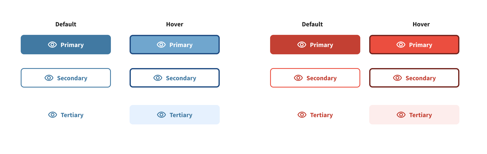
MEGOLDÁSI JAVASLAT — Hover állapot gombokon -
6.4🟠 Jelentős
A fókuszindikátor láthatóságának növelése
ÉRINTETT TERÜLETEK♿ Akadálymentesség · 👤 Használhatóság · 🎨 Fejlesztői együttműködésA gombkomponens rendelkezik külön
focusedállapottal, azonban a fókuszt jelenleg egy nagyon finom árnyék jelzi. Ez billentyűzetes navigáció során nem biztosít kellően egyértelmű vizuális visszajelzést.A fókuszindikátort ezért érdemes a gomb saját vizuális állapotától független, jól látható elemként kezelni.
Javasolt megoldásA fókuszállapothoz egy kontrasztos, a gomb körül megjelenő külső fókuszgyűrű kialakítása. A megoldási javaslatban látható külső körvonal egyértelműen elválasztja a fókuszt a gomb saját háttér- és szegélyszínétől.
Ez a megközelítés a Material Design fókuszkezeléséhez is hasonló: a fókusz nem feltétlenül a gomb saját színének módosításával jelenik meg, hanem külön vizuális indikátorként.
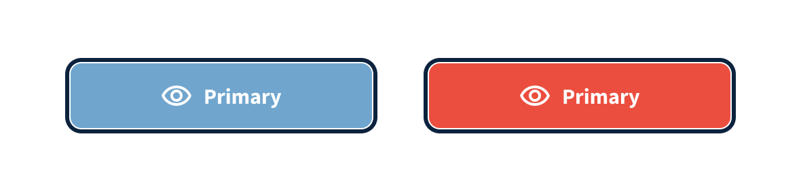
MEGOLDÁSI JAVASLAT — FókuszindikátorRendszerszintű javaslatA fókuszgyűrű színét, vastagságát és távolságát érdemes közös változóként definiálni, hogy ugyanaz a fókuszjelzés más interaktív komponenseknél is használható legyen.
A gombok állapotmodellje alapvetően megfelelő, ezért nem szükséges a komponens struktúrájának újragondolása. A fejlesztési lehetőség elsősorban az állapotok vizuális visszajelzésének következetesebbé tételében rejlik.
A legfontosabb fejlesztés a jól látható, komponeneseken átívelő fókuszindikátor kialakítása. Ez nemcsak az akadálymentességet javítja, hanem egy olyan közös interakciós mintát is létrehoz, amely később más komponenseknél is újrahasznosítható.
Összességében: a jelenlegi gombstruktúra jó alap, a szükséges fejlesztések elsősorban az interakciós visszajelzések finomítását jelentik.
Kategóriaválasztó
A komponens (Category sorter element) alapvető működése megfelelő, azonban két, egymástól független problémát azonosítottunk:
- a komponens nem a design system tipográfiai stílusát használja, hanem egy attól független Inter betűtípust;
- a kiválasztott színkombináció hagyományos WCAG kontrasztmérés szerint megfelelő, az APCA mérés alapján azonban nem biztosít megfelelő olvashatóságot.
A második esetben a javasolt színmódosítás egyszerűen, a meglévő színrendszeren belül megoldható.
-
6.5🟡 Javítandó
Idegen tipográfiai stílus használata
ÉRINTETT TERÜLETEK⚙️ Karbantarthatóság · 🏢 Márkakonzisztencia · 🎨 Fejlesztői együttműködésA komponens szövege Inter betűtípussal van beállítva, miközben a design system saját tipográfiai rendszerét és stílusait használja. Ez eltérést eredményez a rendszerben definiált tipográfiai megjelenéstől.
Érdemes a komponens szövegét a központilag definiált tipográfiai stílushoz kötni, így a komponens automatikusan követi a design system későbbi tipográfiai változásait is.
Javasolt megoldásAz egyedi Inter beállítás helyett a komponens használja a design system megfelelő szövegstílusát.
-
6.5🟠 Jelentős
APCA alapján nem megfelelő színkontraszt
ÉRINTETT TERÜLETEK♿ Akadálymentesség · 👤 HasználhatóságA jelenlegi színkombináció a hagyományos WCAG kontrasztmérés alapján megfelelőnek bizonyul, azonban APCA mérés szerint nem éri el a javasolt kontrasztszintet. Ez különösen kisebb méretű szövegnél jelenthet olvashatósági problémát.
A probléma a meglévő színrendszeren belül egyszerűen javítható.
Javasolt megoldásA háttérszínt az
Info/800értékrőlInfo/900értékre módosítani, a szöveget pedig fehér (Negative) színre állítani.Ez a kombináció nagyobb kontrasztot biztosít, miközben megőrzi a komponens meglévő vizuális karakterét.
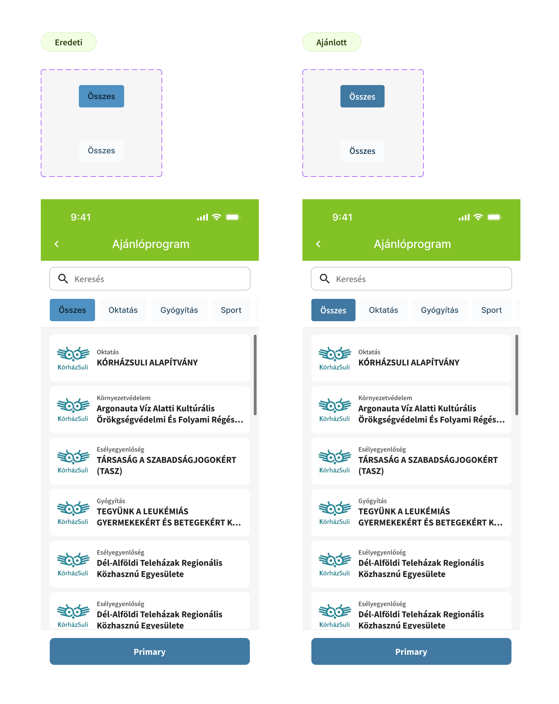
EREDETI vs. AJÁNLOTT — Kategóriaválasztó, kijelölt állapot
A komponensnél azonosított problémák nem igényelnek szerkezeti átalakítást. Mindkettő a már meglévő design system szabályainak következetesebb alkalmazásával kezelhető: központi tipográfiai stílus használata és kontrasztosabb, rendszerszintű színkombináció.
Ez egyben csökkenti az egyedi komponensbeállítások számát, és következetesebb működést biztosít a teljes rendszerben.
Dropdown számlaválasztó
-
6.6🟠 Jelentős
Szövegszínek szemantikus meghatározása
ÉRINTETT TERÜLETEK♿ Akadálymentesség · 👤 Használhatóság · 🎨 Fejlesztői együttműködés · ⚙️ KarbantarthatóságA vizsgált komponensben a számlaszám szövegszíne nem biztosít megfelelő kontrasztot, ezért a szöveg olvashatósága sérül.
A probléma túlmutat az egyedi komponensen: jelenleg nincsenek egyértelműen definiált, szemantikus szövegszínek, például Primary / Secondary / Tertiary / Disabled. Emiatt a komponensekben a szövegszínek egyedi döntések alapján kerülhetnek kiválasztásra, ami növeli a kontrasztproblémák és a vizuális inkonzisztencia kockázatát.
JavaslatA Color Theme rétegben érdemes kialakítani egy szűk, központi Text színrendszert, amelyből a komponensek öröklik a szövegszíneiket. Ez egységesíti a tipográfiai hierarchiát, és megkönnyíti a kontrasztok rendszerszintű ellenőrzését és karbantartását.
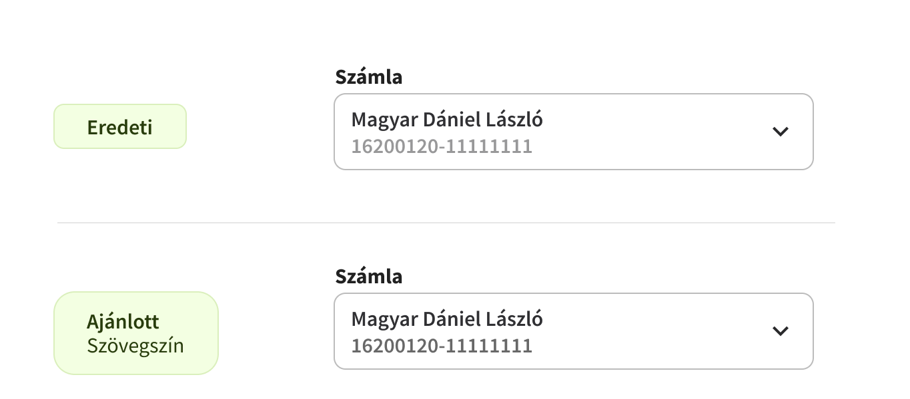
EREDETI vs. AJÁNLOTT — Szövegszín -
6.6🟠 Jelentős
Fókuszindikátor
ÉRINTETT TERÜLETEK♿ Akadálymentesség · 👤 Használhatóság · 🎨 Fejlesztői együttműködés · ⚙️ KarbantarthatóságA komponens rendelkezik fókuszállapottal, azonban a fókuszt jelenleg egy nagyon halvány árnyék jelzi, amely nem biztosít kellően egyértelmű vizuális visszajelzést.
JavaslatÉrdemes egy jól látható, központilag definiált focus indicatort kialakítani, amely minden interaktív komponensben következetesen alkalmazható. Ez biztosítja, hogy a billentyűzetes és egyéb fókuszalapú navigáció során mindig egyértelmű legyen az aktuálisan fókuszált elem.
A fókuszindikátort rendszerszinten érdemes kezelni, így nem szükséges minden komponensnél külön megoldást kialakítani.
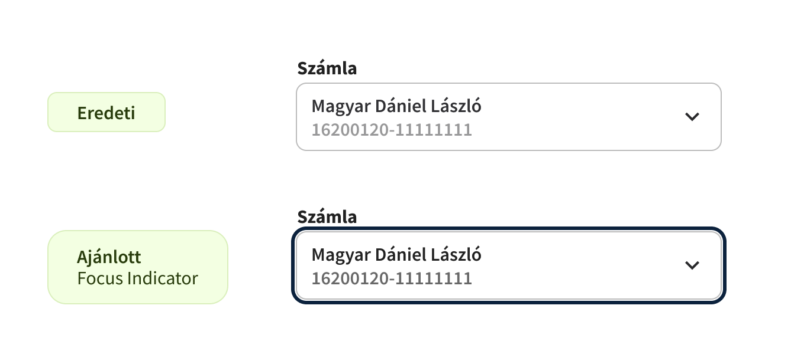
EREDETI vs. AJÁNLOTT — Focus Indicator
Input mezők
Az input mező állapotkészlete összességében jól lefedi a főbb használati helyzeteket: az alap-, hover-, aktív-, loading-, error-, read only- és disabled állapotok rendelkezésre állnak.
A fő fejlesztési lehetőség nem újabb állapotok bevezetése, hanem a meglévők pontosabb szemantikai és vizuális elkülönítése. Különösen az Active és Focused állapotok szétválasztása, valamint a fókusz egyértelmű jelölése javítaná a komponens használhatóságát és akadálymentességét.
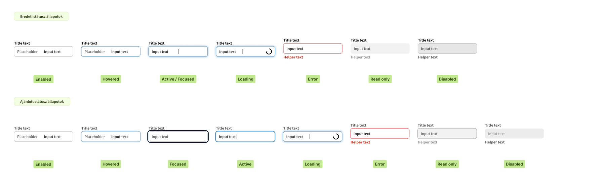
-
6.7🟡 Javítandó
Active és Focused állapotok szétválasztása
ÉRINTETT TERÜLETEK♿ Akadálymentesség · 👤 Használhatóság · 🎨 Fejlesztői együttműködésAz
Active / Focusedjelenleg egy közös állapotként jelenik meg, miközben a két állapot eltérő interakciós helyzetet jelöl. A Focused a navigáció során aktuális fókuszt, míg az Active az aktív interakciót jelenti.JavaslatA két állapotot érdemes különválasztani. Az Active állapotot vastagabb kerettel, a Focused állapotot pedig külön, jól látható fókuszindikátorral javasoljuk megjeleníteni. Ez a komponens állapotmodelljét fejlesztői és felhasználói szempontból is egyértelműbbé teszi.
-
6.7🟠 Jelentős
Fókuszindikátor egyértelműsítése
ÉRINTETT TERÜLETEK♿ Akadálymentesség · 👤 Használhatóság · 🎨 Fejlesztői együttműködés · ⚙️ KarbantarthatóságA jelenlegi Focused állapotot elsősorban egy halvány árnyék jelzi, amely nem biztosít kellően jól látható visszajelzést a fókusz helyéről.
JavaslatA Focused állapot kapjon egy jól látható, rendszerszinten definiált fókuszindikátort. A komponens saját kerete maradhat, erre kerülhet rá a jól elkülönülő külső fókuszkeret. Így a fókuszjelzés a komponens aktuális színétől és állapotától függetlenül következetesen használható.
-
6.7🟡 Javítandó
Read only és Disabled állapot vizuális elkülönítése
ÉRINTETT TERÜLETEK♿ Akadálymentesség · 👤 Használhatóság · 🎨 Fejlesztői együttműködésA két állapot eltérő jelentést hordoz, ezért fontos, hogy vizuálisan is egyértelműen megkülönböztethetők legyenek. A Read only mező továbbra is információt hordoz és olvasható, míg a Disabled mező jelenleg nem használható.
JavaslatA Read only állapotnál érdemes megtartani a jól látható keretet és erősebb semleges színeket használni. A Disabled állapot lehet visszafogottabb, de nem szükséges a tartalmat annyira elhalványítani, hogy az olvashatóság indokolatlanul romoljon.
-
6.7🔵 Optimalizálás
A mezőcím és a tartalom vizuális hierarchiája
ÉRINTETT TERÜLETEK👤 Használhatóság · ♿ Akadálymentesség · 🏢 MárkakonzisztenciaA mező címének visszafogottabb színezése segíthet abban, hogy a felhasználó figyelme elsősorban a mező aktuális tartalmára irányuljon. Ez különösen több inputot tartalmazó űrlapok esetén javíthatja a vizuális hierarchiát és a gyors áttekinthetőséget.
JavaslatA cím kapjon másodlagos vizuális súlyt, miközben az input tartalma erősebb kontraszttal jelenik meg. A cím színét ugyanakkor továbbra is a szemantikus szövegszín-rendszerből érdemes származtatni.
Az input mező alapvető struktúrája megfelelő, teljes újratervezésre nincs szükség. A legfontosabb fejlesztés az állapotok szemantikai szétválasztása és következetesebb vizuális kommunikációja.
A javasolt módosításokkal a komponens egyszerre válhat érthetőbbé a felhasználó, egyértelműbbé a fejlesztő és könnyebben karbantarthatóvá a design system számára.
Tab elemek
A Tab komponens alapvető felépítése megfelelő, az aktív állapot jól azonosítható, és a komponens használata egyértelmű.
A jelenlegi megjelenésnél elsősorban a vizuális hierarchia finomhangolása indokolt. Az inaktív és aktív elemek közötti különbség megfelelő, ugyanakkor a navigációs elem tipográfiai súlya jelenleg túl erős, és az inaktív elemek színe sem különíti el kellően egyértelműen az állapotokat.
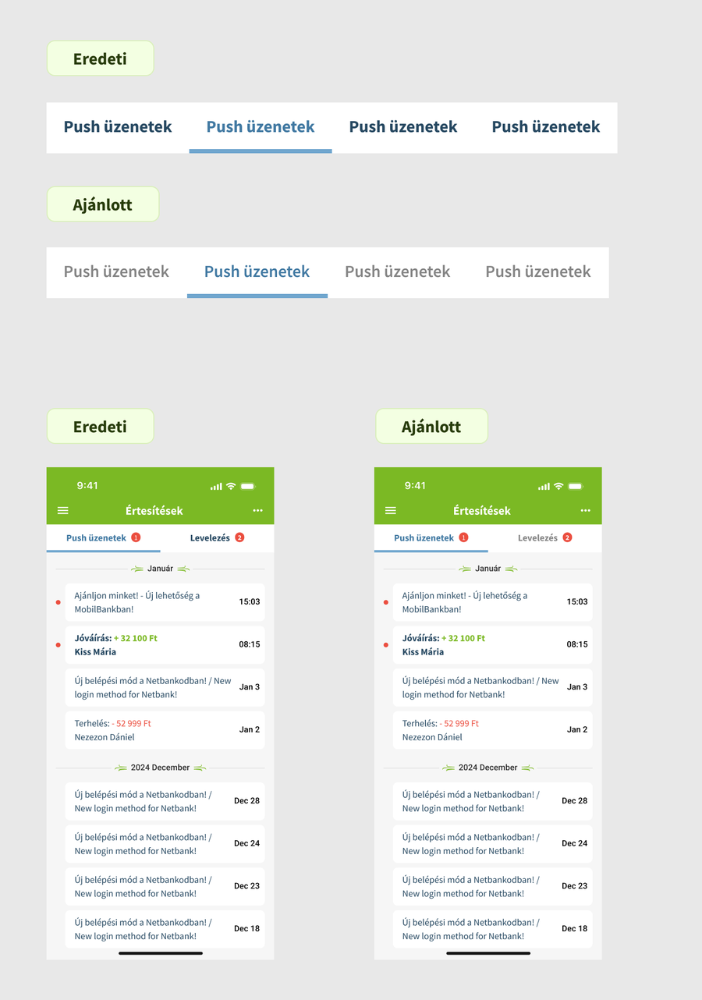
-
6.8🟡 Javítandó
Inaktív Tab vizuális elkülönítése
ÉRINTETT TERÜLETEK♿ Akadálymentesség · 👤 Használhatóság · 🏢 MárkakonzisztenciaAz aktív és az inaktív Tab között jelenleg nincs megfelelő vizuális kontraszt. Az inaktív elemek színe túl közel áll az aktív állapot vizuális súlyához, ezért a navigáció aktuális pozíciója kevésbé egyértelmű.
JavaslatAz inaktív elemek színét érdemes egy jól látható semleges színre, például
Grey/800értékre állítani. Így az aktív állapot továbbra is egyértelműen kiemelkedik, miközben az inaktív elemek nem válnak túl hangsúlyossá. -
6.8🔵 Optimalizálás
A betűvastagság csökkentése
ÉRINTETT TERÜLETEK👤 Használhatóság · 🏢 Márkakonzisztencia · 🧠 Felhasználói bizalomA Tab elemek jelenlegi Bold betűvastagsága vizuálisan túl erős a navigációs szerephez. A nagy betűsúly önmagában is jelentős hangsúlyt ad az elemnek, így a teljes navigációs sáv kissé nehézzé válik, és kevésbé engedi érvényesülni a kapcsolódó tartalmat.
JavaslatA Tab elemeknél a Bold helyett Semibold használata javasolt. Ez megtartja a navigációs elem szükséges hangsúlyát, ugyanakkor kiegyensúlyozottabb vizuális hierarchiát eredményez.
A Tab komponens nem igényel strukturális újratervezést. A fejlesztési lehetőségek elsősorban a vizuális hierarchia finomítására irányulnak: az inaktív állapot visszafogásával és a betűsúly csökkentésével az aktív állapot tisztábban kommunikálható, miközben a navigáció kevésbé válik dominánssá a tartalomhoz képest.
Vizsgált komponensek
A design system saját felépülésének logikája: tokenstruktúra, alapvető és komplex komponensek
Ez a fejezet a rendszer saját felépülését követi végig: a legalapabb réteget (design tokenek, stílusok), az abból építkező alapvető komponenseket (properties, variánsok, layout), majd az ezekből összeálló komplex, több komponensből felépülő elemeket (komponens-kombinációk, minták, folyamatok).
A vizsgálat a design system teljes komponenskészletét áttekintette. Ebbe a fejezetbe azok a komponensek kerültek be, amelyeknél egyértelmű fejlesztési lehetőséget azonosítottunk, vagy ahol tényleges hibát találtunk — a többi komponens a vizsgálat alapján megfelelő állapotban van.
Minden egyes megállapításhoz konkrét, alkalmazható megoldási javaslat tartozik.
- Tokenstruktúra
- 6.1Color Tokens→Színváltozók struktúrája — Primitives, Themes, Component tokens
- 6.2Spacing Tokens→Spacing skála és a szemantikus réteg lehetősége
- 6.3Typography Tokens→Font family, size, weight, line-height és a Style layer állapota
- Alapvető komponensek
- 6.4Gombok→Állapotmodell, hover- és fókuszjelzés
- 6.5Kategóriaválasztó→Tipográfiai eltérés és APCA-kontraszt felülvizsgálat
- 6.6Dropdown számlaválasztó→Szemantikus szövegszínek és fókuszindikátor
- 6.7Input mezők→Állapotkészlet: Active/Focused szétválasztás, fókuszjelzés
- 6.8Tab elemek→Vizuális hierarchia: inaktív állapot és betűvastagság
- Komplex komponensek
- 6.9Appbar→Kontrasztkezelés brand- és tematikus háttérszíneken
- 6.10Kártyák→Tipográfia és állapotkezelés finomhangolása
- 6.11Category sorter→Komponensstruktúra és vizuális hierarchia
- 6.12Tranzakciós kártya→Összegek kontrasztja és információs hierarchiája
Appbar
Az Appbar jelenlegi színkezelése kontraszt szempontjából problémás: a brand- és tematikus háttérszínekre helyezett fehér vagy sötét tartalmak kontrasztja nem minden esetben megfelelő. Ez különösen problémás lehet a navigációs elemek és a címszöveg esetében, amelyeknek elsődleges funkciójuk a gyors és egyértelmű felismerhetőség.
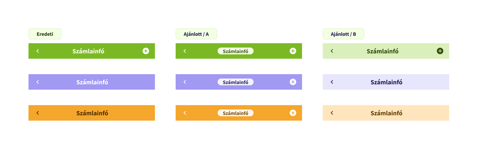
-
6.9🔴 Kritikus
Appbar kontraszt javítása
ÉRINTETT TERÜLETEK♿ Akadálymentesség · 🏢 Márkakonzisztencia · 👤 HasználhatóságA brand- és tematikus háttérszínekre helyezett tartalom kontrasztja nem minden esetben megfelelő, különösen a navigációs elemeknél és a címszövegnél. Két lehetséges irány született a javításra:
A irány — Tartalom kiemelése kontrasztos felületekkelA háttérszín megtartása mellett a fontos navigációs elemek kontrasztos, világos felületet kapnak. Ez lehetővé teszi a jelenlegi erős brand-szín megtartását, miközben a cím és az interaktív elemek kontrasztja javul.
B irány — Világosabb háttér, sötét tartalomAlternatív megoldásként az Appbar háttérszíne világosabb árnyalatra váltható, amelyhez sötét szöveg és ikonok társulnak. Ez egyszerűbb és kontraszt szempontjából stabilabb megoldás lehet, ugyanakkor a jelenlegi, erőteljes brandmegjelenést jelentősen visszafogja.
A két irány közül az A megoldás tűnik erősebbnek, mert a kontraszt javítása mellett jobban megőrzi az Appbar jelenlegi vizuális karakterét és a brand színének dominanciáját.
Ugyanakkor érdemes a megoldást token szinten kialakítani úgy, hogy a különböző háttérszínekhez mindig egyértelműen meghatározott, megfelelő kontrasztú tartalomszín tartozzon. Így a probléma nemcsak az Appbar jelenlegi példáiban, hanem a későbbi tematikus vagy brandelt felületeken is megelőzhető.
Kártyák
A Card komponensek alapvetően jól működő vizuális és strukturális alapokra épülnek. A vizsgálat során elsősorban tipográfiai és állapotkezelési finomhangolási lehetőségek azonosíthatók.
A különböző kártyatípusoknál visszatérő probléma a kisebb, másodlagos információk kezelése: a 12 px-es szövegek több esetben nehezebben olvashatók, miközben a vizuális hierarchia miatt indokolt a visszafogott megjelenésük. Erre egységesebb, rendszerszintű megoldást érdemes kialakítani.
-
6.10🔵 Optimalizálás
Body text sortávolságának optimalizálása
ÉRINTETT TERÜLETEK👤 Használhatóság · 🏢 MárkakonzisztenciaA Card body textje jelenleg 150%-os line-height értéket használ. Ez önmagában nem tekinthető hibásnak, azonban a Card komponensekben a 125–135% körüli sortávolság kompaktabb és kiegyensúlyozottabb kompozíciót eredményezhet.
Az alacsonyabb sortávolság csökkenti a szöveg által elfoglalt helyet, és kedvezőbb arányt teremthet a szöveg és a körülötte lévő tér között. Ez a MagNet Bank letisztult, kompakt vizuális karakteréhez is jobban illeszkedhet.
A 150%-os érték több komponensben is megjelenik, ezért ezt a tipográfiai rendszer szintjén általánosan is érdemes felülvizsgálni.
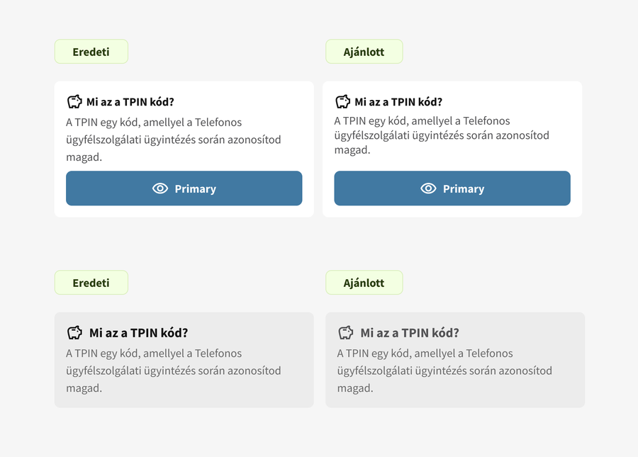
EREDETI vs. AJÁNLOTT — Body text sortávolság -
6.10🟡 Javítandó
Disabled állapot vizuális erősítése
ÉRINTETT TERÜLETEK👤 Használhatóság · ♿ Akadálymentesség · 🏢 MárkakonzisztenciaA disabled Card esetében a title jelenleg megtartja a primary, fekete színt, miközben a többi elem már visszafogottabb. Emiatt az állapot vizuálisan nem teljesen egységes.
A title színének megfelelő szürkére váltása erősebb és koherensebb disabled állapotot eredményezhet. A teljes komponens így egységesen kommunikálja, hogy az elem jelenleg nem aktív.
A választott szürke értéknél természetesen továbbra is figyelembe kell venni a megfelelő kontrasztot, különösen az információt hordozó szövegek esetében.
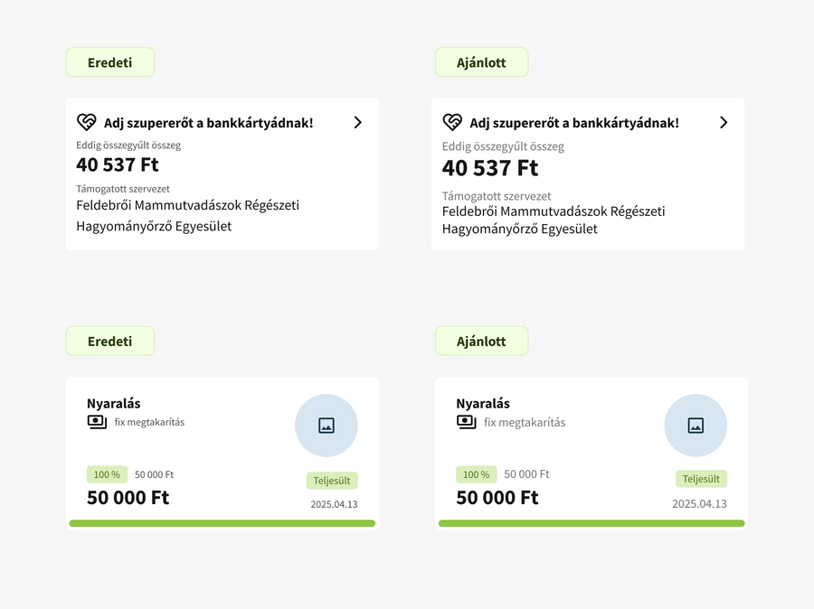
EREDETI vs. AJÁNLOTT — Kártya állapotkezelés -
6.10🟡 Javítandó
Kis méretű másodlagos szövegek méretének növelése
ÉRINTETT TERÜLETEK♿ Akadálymentesség · 👤 Használhatóság · 🏢 MárkakonzisztenciaA mini és speciális Card komponensekben több helyen 12 px-es másodlagos szöveg jelenik meg. Ilyen kis komponenseknél ez már nehezebben olvasható, különösen hosszabb vagy információban gazdag kártyák esetében.
Javasolt a méret 14 px-re emelése, miközben a szöveg vizuális hierarchiájának megőrzése érdekében továbbra is visszafogott szürke szín használható. A vizsgált
#757575érték fehér háttéren 4,6:1 kontrasztot biztosít, így megfelelő kiindulópont lehet.A nagyobb betűméret javítja az olvashatóságot, a szürke szín pedig megőrzi a szöveg másodlagos szerepét.
Mivel ugyanez a probléma több kártyatípusban is visszatér, ezt nem Card-specifikus döntésként, hanem a tipográfiai rendszer részeként érdemes kezelni.
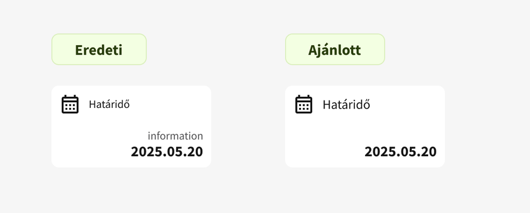
EREDETI vs. AJÁNLOTT — Mini kártya másodlagos szöveg
A Card komponenseknél nem látható olyan probléma, amely alapvető újratervezést indokolna. A fő lehetőség az egységesebb tipográfiai és állapotkezelési szabályok kialakítása.
Különösen fontos, hogy a 12 px-es másodlagos szöveg és a 150%-os line-height kérdését ne minden komponensnél külön kezeljük. Ezek több helyen visszatérő minták, ezért a tipográfiai rendszerben érdemes rájuk központi szabályt kialakítani, amelyet a Card komponensek követnek.
Category sorter
A Category sorter jelenleg egyetlen komponensként jelenik meg, beágyazott építőelemek nélkül. A komponens szerkezete és vizuális állapotai egységesebb, rugalmasabban iterálható felépítést igényelnek.
-
6.11🔵 Optimalizálás
Beágyazott komponensstruktúra kialakítása
ÉRINTETT TERÜLETEK🎨 Fejlesztői együttműködés · ⚙️ Karbantarthatóság · 📈 SkálázhatóságA Category sorter jelenleg egyetlen komponensként jelenik meg, beágyazott építőelemek nélkül. Ez korlátozza az egyes kategóriaelemek önálló kezelését, és nagyobb, összetettebb komponenseknél könnyen nehezen áttekinthető property-struktúrát eredményezhet.
Javasolt a komponens beágyazott komponensstruktúrájú kialakítása: a kategóriaelemek önálló, dokumentált építőelemként kezelhetők saját állapotokkal, míg a teljes Category sorter ezeket kompozit komponensként rendezi egységbe.
A kompozit felépítés lehetővé teszi a Slots használatát, így a szükséges számú kategóriaelem rugalmasan beágyazható, cserélhető és átrendezhető. Ez egyszerűsíti a különböző tartalmi összeállítások létrehozását, valamint gyorsabbá és átláthatóbbá teszi a design későbbi iterációját.
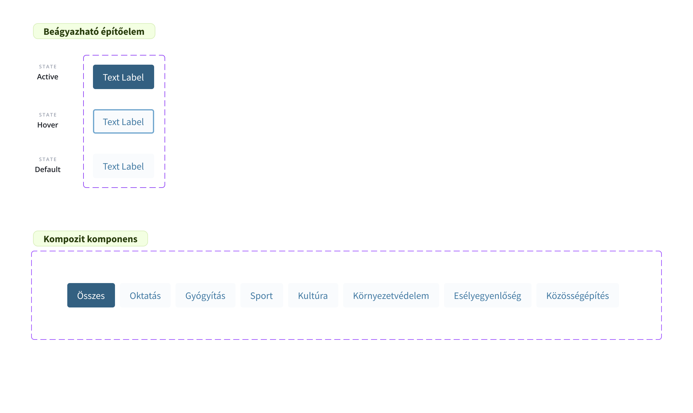
AJÁNLOTT — Beágyazható építőelem és kompozit komponens -
6.11🟡 Javítandó
Állapotkontraszt és vizuális hierarchia finomhangolása
ÉRINTETT TERÜLETEK♿ Akadálymentesség · 👤 Használhatóság · 🏢 MárkakonzisztenciaA Category sorter jelenlegi aktív és passzív állapotai között a vizuális különbség nem elég hangsúlyos. Emellett a komponens a design systemtől idegen betűtípust használ, ami eltérést okoz a rendszer tipográfiai megjelenésében.
Javasolt az aktív állapot kontrasztjának növelése sötétebb háttérrel és világos szöveggel, hogy a kiválasztott kategória egyértelműen felismerhető legyen. A passzív elemek vizuális hangsúlya ezzel párhuzamosan csökkenthető, miközben a szöveg kontrasztja továbbra is eléri a szükséges olvashatósági szintet.
A passzív elemek visszafogottabb megjelenése több vizuális teret hagy a képernyő elsődleges tartalmának. A belső font használata pedig egységesebbé teszi a komponens megjelenését, és szorosabban illeszti azt a design systemhez.
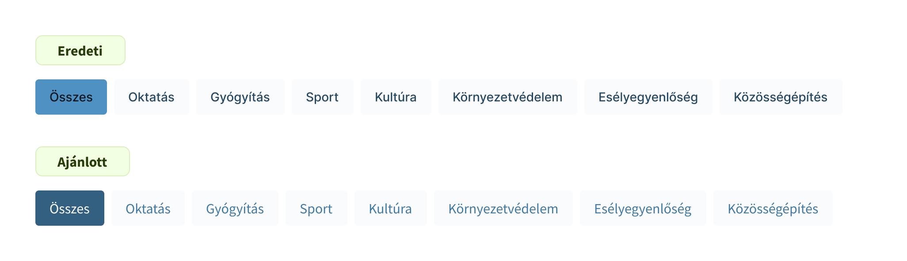
EREDETI vs. AJÁNLOTT — Állapotkontraszt és vizuális hierarchia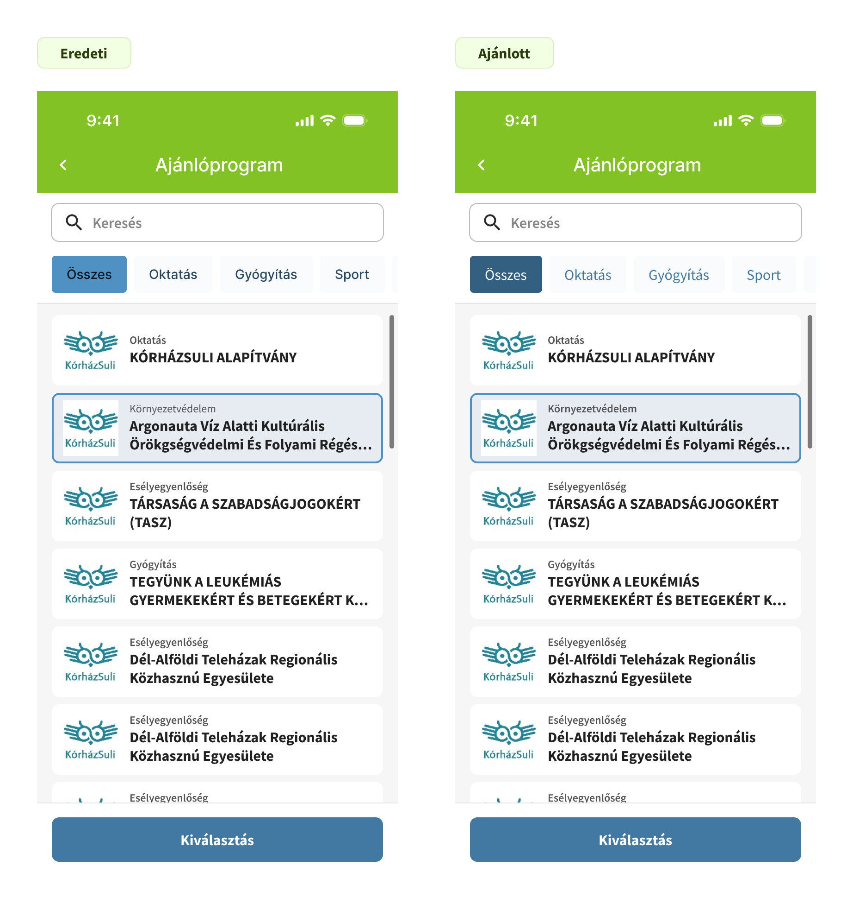
EREDETI vs. AJÁNLOTT — Beágyazott megjelenés mobil képernyőn
Tranzakciós kártya
A Transaction item komponensnél a tranzakció összegének megjelenítésével kapcsolatban merül fel kontrasztprobléma. A jóváírásokhoz és terhelésekhez használt zöld és piros színek a kontrasztvizsgálatokon nem teljesítenek megfelelően.
Mivel az összeg a tranzakció egyik legfontosabb információja, annak megfelelő kontrasztú megjelenítése kiemelten fontos. A kontrasztprobléma javítására két irány született, emellett egy harmadik, koncepcionálisan tágabb javaslat is felmerült, amely az információs hierarchiát is újragondolja.
-
6.12🟠 Jelentős
Kontraszt javítása
ÉRINTETT TERÜLETEK♿ Akadálymentesség · 👤 Használhatóság · 🏢 MárkakonzisztenciaA jóváírásokhoz és terhelésekhez használt zöld és piros színek nem teljesítenek megfelelően a kontrasztvizsgálatokon. Két lehetséges irány született a javításra:
A irány — Kontrasztosabb színek használataA legegyszerűbb megoldás a jelenlegi színek cseréje megfelelő kontrasztot biztosító árnyalatokra:
- Green/700 → Green/1200
- Error/700 → Red/800
Ezzel a jelenlegi komponensstruktúra és vizuális megoldás változatlan maradhat, miközben az összegek kontrasztja megfelelővé válik. Hátránya, hogy a sötétebb színek vizuálisan távolabb kerülhetnek a jelenlegi MagNet brand által használt élénkebb, karakteres színvilágtól.
B irány — Highlightolt keretek alkalmazásaAlternatív megoldásként az összegek kiemelő háttérrel vagy kerettel jelenhetnek meg — nem kizárólag a szövegszín, hanem a szöveg és a hozzá tartozó kiemelő felület együttese biztosítja a szükséges kontrasztot. Ez összetettebbé teszi a komponenst, de jobban megőrizheti a jelenlegi brandhez illeszkedő, karakteres színhasználatot, és a jóváírás/terhelés vizuális jelentése is hangsúlyosabbá válhat.
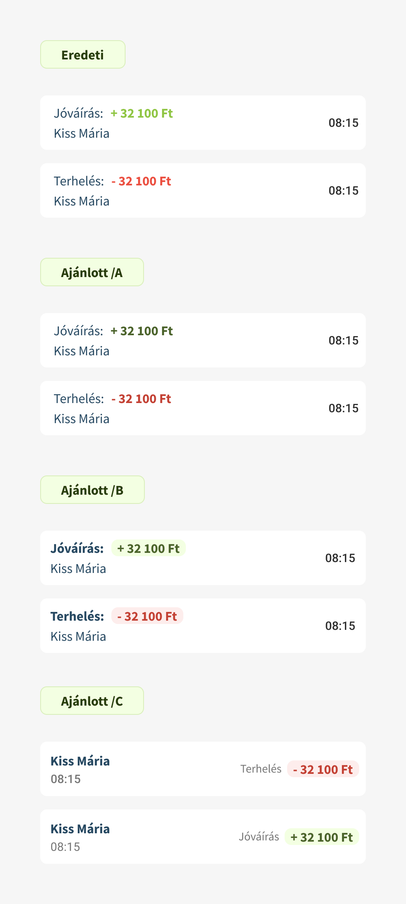
EREDETI vs. AJÁNLOTT — Kontraszt és információs hierarchia -
6.12🔵 Optimalizálás
Layout és információs hierarchia átgondolása
ÉRINTETT TERÜLETEK👤 Használhatóság · 🏢 MárkakonzisztenciaA harmadik irány nem kizárólag a kontrasztproblémát kezeli, hanem a Transaction item információs hierarchiáját is újragondolja.
A jelenlegi elrendezésben az időpont kap hangsúlyosabb pozíciót, miközben a tranzakció összege az adott modul egyik legfontosabb információja. A javasolt változatban az összeg kerül elsődleges pozícióba, az időpont pedig másodlagos információként jelenik meg.
Ez a megközelítés lehetőséget ad arra, hogy a tranzakció típusát és összegét vizuálisan erősebben kapcsoljuk össze, miközben az időpont kevésbé dominálja a komponenst.
Ez már nem pusztán egy színkorrekció, hanem a komponens információs hierarchiájának továbbfejlesztése, ezért érdemes lehet külön megvizsgálni, hogy a tranzakciós modul céljaihoz ez az elrendezés illeszkedik-e jobban.
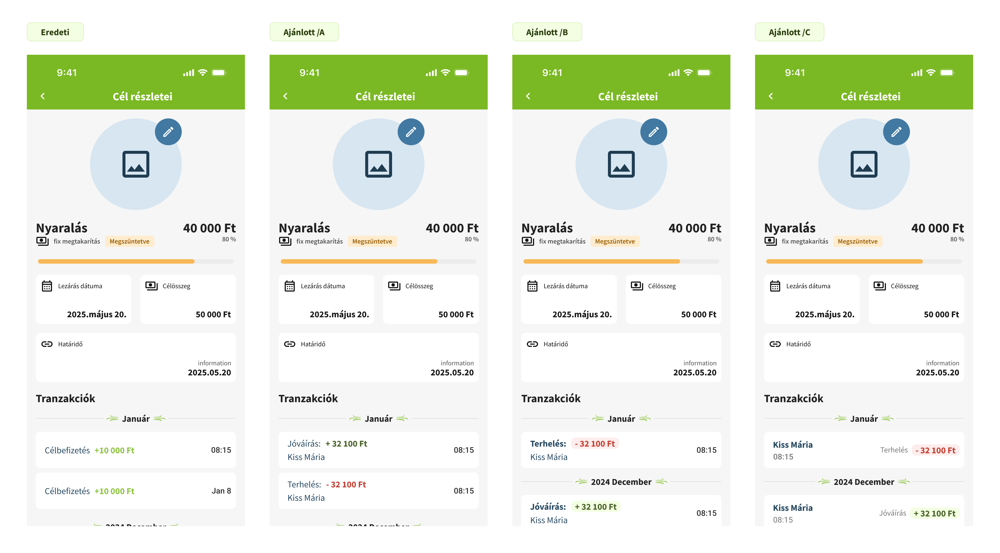
EREDETI vs. AJÁNLOTT — Tranzakciós kártya mobil kontextusban
A kontraszt javítására szolgáló két irány közül az A megoldás a legegyszerűbb és legkisebb beavatkozást igénylő javítás, mivel kizárólag a problémás színek módosításával kezeli a kontrasztproblémát. A B megoldás erősebb vizuális kompromisszumot kínál: összetettebbé teszi ugyan a komponenst, de jobban megőrizheti a MagNet brand karakteres színhasználatát.
A második, koncepcionálisan tágabb javaslat (Layout és információs hierarchia átgondolása) túlmutat a kontraszt javításán, és egyben az információs hierarchia újragondolására is lehetőséget ad. Emiatt ezt érdemes lehet külön alternatívaként kezelni, különösen akkor, ha a Transaction item teljes információs struktúráját is felülvizsgáljuk.
Összességében a kontrasztprobléma javítása szükséges, de a végleges irány kiválasztásánál érdemes az akadálymentességi megfelelést a brandkarakter és az információs hierarchia szempontjaival együtt kezelni.
Komponensminőség
Felépítés, állapotok, tokenhasználat, mikrointerakciók
Ez a fejezet a komponensek minőségét vizsgálja: a felépítésüket és beállíthatóságukat, az állapot- és property-rendszerüket, a frame-szintű felépítést és tokenhasználatot, valamint a beépített mikrointerakciókat.
A komponensrendszer alapvetően jó minőségű és megfelelő strukturális alapokra épül. A vizsgálat alapján nem azonosítható olyan általános komponensarchitekturális probléma, amely alapvető újratervezést tenne szükségessé.
A legfontosabb fejlesztési lehetőségek inkább a rendszer következetesebbé és hatékonyabban újrahasználhatóvá tételére irányulnak:
- egységes rendszerszintű state modell,
- komplex komponenseknél rugalmasabb, kétrétegű komponensstruktúra,
- a meglévő spacing és typography tokenek következetesebb komponensszintű alkalmazása,
- valamint a komponensekhez tartozó mikrointerakciók Figma prototypingben történő előzetes beállítása.
A komponensrendszer jelenlegi állapota ezért összességében megfelelőnek tekinthető; a következő fejlesztési lépések elsősorban a konzisztencia, újrahasználhatóság és skálázhatóság növelését szolgálják.
- 1.1Komponensek felépítése és beállíthatósága→Kétrétegű komponensstruktúra lehetősége komplex elemeknél
- 1.2Állapotok és egyéb property-k→Rendszerszintű state modell és state vocabulary
- 1.3Frame felépítés és tokenhasználat→Auto Layout, responsiveness, spacing és typography tokenek
- 1.4Beépített mikrointerakciók→Állapotátmenetek összekötése a Figma prototyping rendszerében
Komponensek felépítése és beállíthatósága
-
1.1🔵 Optimalizálás
Komponensek felépítése és beállíthatósága
ÉRINTETT TERÜLETEK🧱 Komponensstruktúra · 🎨 Fejlesztői együttműködés · ⚙️ Karbantarthatóság · 📈 SkálázhatóságA vizsgált komponensek felépítése és általános minősége összességében megfelelő. A komponensek struktúrája jellemzően átgondolt, a meglévő építőelemek jól használhatók, és nem azonosítható olyan általános strukturális probléma, amely a komponensrendszer újratervezését indokolná.
A komplexebb komponenseknél ugyanakkor több esetben előnyös lehet a komponensek kétrétegű felépítésének alkalmazása:
- Beágyazható építőelem — önállóan kezelhető komponens, saját állapotokkal és beállítási lehetőségekkel.
- Kompozit komponens — az építőelemekből felépülő magasabb szintű komponens, amely a szükséges elemeket például Slots segítségével rugalmasan fogadja és rendezi.
Konkrét példa a rendszerből — Category sorterCategory elem (építőelem) ├── állapotok: Default / Selected / Disabled └── property: label Category sorter (kompozit komponens) ├── Slot → Category elem ("Összes") ├── Slot → Category elem ("Számlák") ├── Slot → Category elem ("Kártyák") └── Slot → Category elem (...)Részletesen lásd: 6.11 · Category sorter.
Ez a megközelítés különösen akkor hasznos, amikor egy komplex komponens több, ismétlődő vagy változó számú elemből épül fel. Az egyes építőelemek önálló kezelhetősége egyszerűbbé teszi a komponensek újrafelhasználását, módosítását és későbbi bővítését.
Összességében a komponensek felépítése megfelelőnek tekinthető. A kétrétegű komponensstruktúra elsősorban a komplexebb elemek rugalmasságát és hosszú távú karbantarthatóságát javító optimalizációs lehetőség.
Állapotok és egyéb property-k
-
1.2🔵 Optimalizálás
Állapotok és egyéb property-k
ÉRINTETT TERÜLETEK🔄 Állapotmodell · ♿ Akadálymentesség · 👤 Használhatóság · 🎨 Fejlesztői együttműködés · ⚙️ KarbantarthatóságA vizsgálat során a komponenseknél elvárt alapvető interakciós állapotok – például hover, focus, active, disabled és error – többségét megfelelően lefedettnek találtam. Azokban az esetekben, ahol egy adott komponensnél hiányzó vagy nem megfelelően definiált állapotot azonosítottam, azt az adott komponenshez kapcsolódó vizsgálatban külön jeleztem.
A meglévő állapotok mellett a komponensek property-struktúrája összességében megfelelő alapot biztosít a komponensek különböző konfigurációinak kezelésére. A legfontosabb további lehetőség nem újabb állapotok tömeges bevezetése, hanem az állapotok rendszerszintű egységesítése.
Ajánlott rendszerszintű state modell kialakításaA jelenlegi komponenseknél több egyedi állapotmodell is megjelenik, azonban nincs egységesen definiált state modell, amely meghatározná, hogy az egyes állapotokat milyen néven, milyen jelentéssel és milyen vizuális visszajelzéssel kell kezelni.
Ez elsősorban az állapotok elnevezésében és szemantikai jelentésében okozhat eltéréseket. A rendszerben például az Enabled, Hovered, Tapped, Focused és Active megnevezések is megjelennek, amelyek nem minden esetben ugyanazt a logikát követik. Az Input komponensnél például az Active / Focused jelenleg közös állapotként jelenik meg, miközben a két állapot eltérő interakciós helyzetet jelöl.
Érdemes ezért egy közös state vocabulary-t és állapotmodellt kialakítani, amely meghatározza az alapvető állapotokat, azok jelentését és egységes vizuális kommunikációját. Ennek része lehet például a Default, Hover, Focus, Active/Pressed, Disabled, Error és Loading állapotok következetes kezelése.
Ajánlott state modell struktúraÁllapot modell (state vocabulary) ├── Default ├── Hover ├── Focus — billentyűzetes navigáció ├── Active / Pressed — aktív interakció közben ├── Disabled ├── Error └── Loading
Ez nem feltétlenül jelent minden komponens számára azonos számú állapotot. A cél inkább az, hogy azonos jelentésű interakciós helyzetek az egész rendszerben azonos terminológiával és lehetőség szerint azonos vizuális logikával jelenjenek meg.
Frame felépítés és tokenhasználat
-
1.3🟠 Jelentős
Frame felépítés és tokenhasználat
ÉRINTETT TERÜLETEK🧱 Komponensstruktúra · ⚙️ Karbantarthatóság · 🎨 Fejlesztői együttműködés · 📈 Skálázhatóság · 🏢 MárkakonzisztenciaAuto Layout, responsiveness, min–max, text handlingA komponensek frame-szintű felépítését összességében professzionálisnak találtam. Az Auto Layout használata megfelelően jelenik meg mind az egyszerűbb, mind a komplexebb komponenseknél, és a komponensek belső struktúrája jellemzően jól támogatja az újrahasználhatóságot.
A min/max width és height értékek használata ugyanakkor több esetben nem volt megfigyelhető. Ez önmagában nem tekinthető problémának, mivel a vizsgált komponenseknél nem minden esetben volt olyan tartalmi vagy layout-szituáció, amely indokolttá tette volna ezek alkalmazását. Ahol a komponens működése nem igényel ilyen korlátozásokat, ott ezek hiánya nem jelent minőségi problémát.
A responsiveness szempontjából ezért elsősorban arra érdemes figyelni, hogy a komponensek a változó tartalomhoz és rendelkezésre álló helyhez megfelelően alkalmazkodjanak, különösen a komplexebb komponenseknél és hosszabb szöveges tartalmak esetében.
TokenhasználatA tokenhasználatban ugyanakkor több hiányosság is azonosítható.
Különösen a spacing tokenek alkalmazásánál tapasztalható, hogy azok nem minden esetben kerülnek ténylegesen beágyazásra a komponensekbe. Ez főként a komplexebb komponenseknél jelent problémát, ahol több belső spacing érték és layout-szabály található.
Ennek következtében egyes komponensekben olyan egyedi értékek jelenhetnek meg, amelyek helyett a design system meglévő tokenjei is használhatók lennének. A tokenek következetes alkalmazása csökkenti az egyedi beállítások számát, és megkönnyíti a rendszer későbbi módosítását és karbantartását.
Hasonló hiányosság figyelhető meg a tipográfiai stílusok használatában is. A rendszerben már rendelkezésre állnak a tipográfia alapjai és a szemantikus szerepek, azonban a ténylegesen használható, teljes körű Typography Style réteg még nem mindenhol jelenik meg. Ez azt eredményezheti, hogy egyes komponensekben a tipográfiai értékeket egyedileg kell beállítani ahelyett, hogy központilag definiált stílusokra támaszkodnának.
Jelenlegi (egyedi érték) Ajánlott (token / style) Padding: 16 → Spacing/md Gap: 12 → Spacing/sm Font size: 15 (egyedi) → Body/2 (Typography Style)
JavaslatA meglévő tokenrendszer további komponensszintű alkalmazása, különösen a spacing és typography területén. A cél nem újabb tokenek létrehozása, hanem a már meglévő rendszerszintű értékek következetesebb használata.
Beépített mikrointerakciók
-
1.4🔵 Optimalizálás
Beépített mikrointerakciók
ÉRINTETT TERÜLETEK🔄 Állapotmodell · 👤 Használhatóság · 🎨 Fejlesztői együttműködés · ⚙️ KarbantarthatóságA komponensek állapotmodellje alapján a rendszer rendelkezik azokkal az alapokkal, amelyekre a mikrointerakciók és állapotváltások építhetők. A különböző state-ek – például hover, focus, active vagy disabled – megfelelő kiindulópontot biztosítanak az interakciók definiálásához.
A vizsgálat során ugyanakkor azt tapasztaltam, hogy ezek az interakciók a Figma prototyping rendszerében nem voltak minden esetben ténylegesen összekötve és beállítva az egyes komponenseken. Ez például a gombok és input mezők esetében azt jelenti, hogy a komponens rendelkezik a szükséges állapotokkal, de a state-ek közötti átmenetek nincsenek beépítve a komponens használatába.
A mikrointerakciók komponensszintű kialakítása jelentősen megkönnyítené a prototípusok készítését. Ahelyett, hogy az egyes screenek elkészítésekor minden interakciót újra manuálisan kellene létrehozni, a komponens már eleve tartalmazhatná a megfelelő state-váltásokat és azokhoz kapcsolódó viselkedést.
JavaslatA meglévő állapotok és interakciók összekapcsolása a Figma prototyping rendszerében minden releváns komponens esetében. Érdemes ezt rendszerszinten, egységes interaction logika mentén kialakítani, hogy a komponensek használata során a mikrointerakciók automatikusan öröklődjenek a prototípusokba.
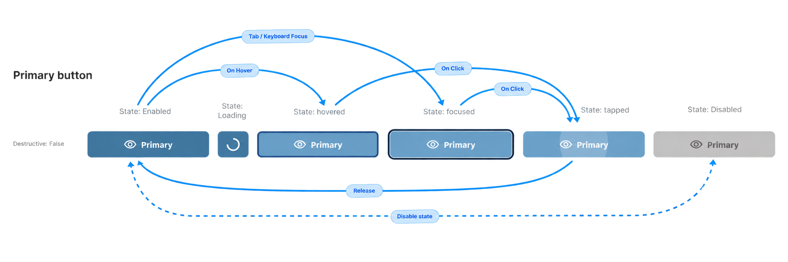
AJÁNLOTT — Állapotátmenetek bekötése a Figma prototyping rendszerében→ görgethetőÖsszességében tehát a szükséges alapok rendelkezésre állnak, azonban az interakciók beállítása és összekötése még további munkát igényel.
Rendezettség, kereshetőség
Oldalstruktúra, naming konvenció, annotációk és handoff
Ez a fejezet a Figma fájl rendezettségét vizsgálja: az oldalakra tagolást, a komponensek és tokenek elnevezési konvencióját, valamint a hozzájuk kapcsolódó dokumentációt és fejlesztői handoffot.
A rendezettség és kereshetőség a MagNet Design System egyik legerősebb területe. Az oldalstruktúra jól szervezett, a komponensek elnevezései jellemzően következetesek, és a hozzájuk tartozó dokumentáció megfelelő részletességű.
A feltárt hiányosságok ezért nem strukturális problémák, hanem elsősorban finomhangolási lehetőségek. A legfontosabb további lépések:
- az általános Frame X jellegű layer-nevek megszüntetése,
- a tokenek – különösen az állapotokat jelölő tokenek – naming konvenciójának egységesítése,
- a tipográfiai tokenrendszer további finomítása,
- valamint az edge case-ek következetesebb dokumentálása.
Ezek a módosítások tovább javítanák a Design System kereshetőségét, a dokumentáció minőségét és a fejlesztői handoff hatékonyságát, miközben a jelenlegi struktúra alapvető megváltoztatására nincs szükség.
- 2.1Oldalakra rendezettség→A Figma fájl struktúrájának átláthatósága
- 2.2Komponens naming konvenció→Layer- és tokennevek egységessége
- 2.3Annotációk és handoff→Dokumentáció mélysége és edge case-ek
Oldalakra rendezettség
-
2.1🟢 Megfelelő
Oldalakra rendezettség
ÉRINTETT TERÜLETEK🔎 Kereshetőség · 📚 Dokumentáció · ⚙️ Karbantarthatóság · 🎨 Designeri együttműködésA Design System egyik kiemelkedő erőssége az oldalak és a hozzájuk kapcsolódó tartalmak rendezettsége. A Figma fájl struktúrája jól átlátható és koherens rendszert alkot, amely megkönnyíti a különböző komponensek és kapcsolódó információk megtalálását.
Az egyes oldalakon megfelelő részletességű dokumentáció található az adott elemről, annak használatáról, valamint a hozzá tartozó design specifikációkról. Ez nemcsak a designerek számára teszi könnyebbé a rendszer használatát, hanem a fejlesztői együttműködést és a későbbi karbantarthatóságot is támogatja.
A vizsgálat alapján ezen a területen érdemi strukturális problémát nem azonosítottam. A jelenlegi oldalstruktúra alkalmas a rendszer további bővítésére is.
Komponens naming konvenció
-
2.2🔵 Optimalizálás
Komponens naming konvenció
ÉRINTETT TERÜLETEK🔎 Kereshetőség · 📚 Dokumentáció · 🎨 Designeri együttműködés · 👨💻 Fejlesztői handoffA naming konvenciók összességében nagyon magas, körülbelül 95%-os minőségűek, és közel vannak az egységes, következetes rendszerhez.
A komponensek esetében a layerek elnevezése jellemzően jól strukturált és koherens. A nevek többnyire egyértelműen tükrözik az adott elem szerepét, ami jelentősen megkönnyíti a komponensek megértését és a Figma fájlon belüli navigációt.
Néhány esetben azonban még előfordulnak általános, automatikusan generált layer-nevek, például Frame X. Ez elsősorban komplexebb komponensek belső struktúrájában figyelhető meg, például a Card Row és egyes kártyakomponensek esetében.
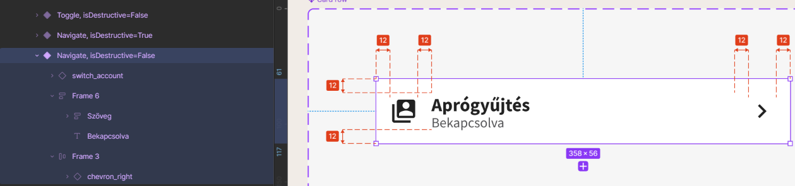
EREDETI — Generikus layer-nevek (Frame 6, Frame 3) a Card row / Navigate komponensbenJavasolt átnevezés- Frame 6 → Label Stack — a Szöveg és Bekapcsolva címkepárost fogja össze
- Frame 3 → Trailing Icon — a chevron_right ikont tartalmazza
Ezek önmagukban nem akadályozzák a komponensek használatát, azonban a belső layer-struktúra dokumentáltságát és fejlesztői olvashatóságát tovább javítaná, ha ezek az elemek is funkciójuknak megfelelő, szemantikailag értelmezhető nevet kapnának.
A tokenrendszer naming konvencióiban szintén azonosíthatók kisebb következetlenségek. Elsősorban az állapotokat jelölő tokennevek esetében jelenik meg eltérő terminológia: például az Enabled, Hovered, Tapped, Focused és Active megnevezések nem minden esetben ugyanazt a naming logikát követik. Ez a komponensek állapotmodelljében már említett rendszerszintű konzisztencia-problémához is kapcsolódik.
JavaslatÉrdemes a tokenek és komponensek naming konvencióját egy közös, dokumentált szabályrendszerben rögzíteni, különös tekintettel az állapotok és property-k elnevezésére. A meglévő, általános layer-nevek esetében pedig ezek egyszerűen és gyorsan korrigálhatók akár a Figma Agent segítségével is.
Annotációk és handoff
-
2.3🔵 Optimalizálás
Annotációk és handoff
ÉRINTETT TERÜLETEK👨💻 Fejlesztői handoff · 📚 Dokumentáció · 👤 Használhatóság · ⚙️ KarbantarthatóságA komponensekhez kapcsolódó dokumentáció összességében pontos, részletes és jól strukturált. A vizsgált elemek esetében megfelelő mennyiségű információ áll rendelkezésre azok használatáról, viselkedéséről és design specifikációiról.
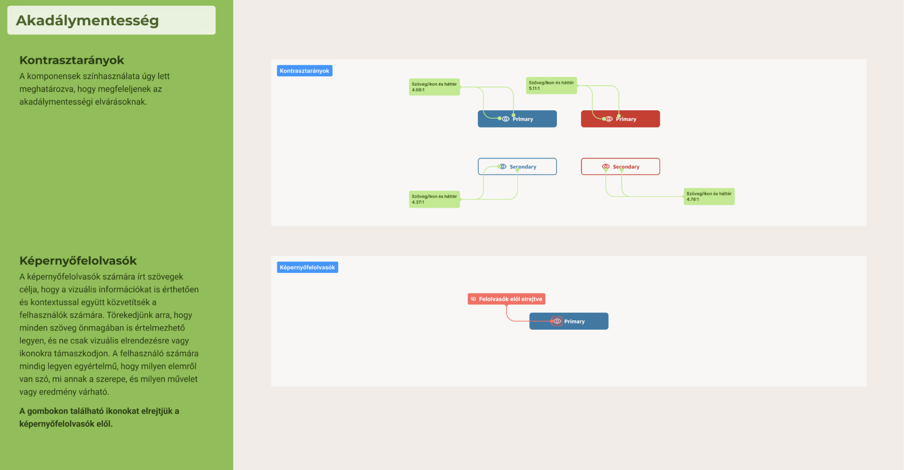
PÉLDA — Akadálymentességi annotációk a komponens-dokumentációbanEz megfelelő alapot biztosít a design és fejlesztés közötti együttműködéshez, valamint csökkenti annak szükségességét, hogy a fejlesztők az egyes komponensek működésével kapcsolatban további információkat keressenek vagy külön egyeztetéseket kezdeményezzenek.
A handoff minőségét elsősorban a már korábban azonosított tokenrendszerbeli hiányosságok korlátozzák. Különösen a tipográfiai tokenek és a komponensekben ténylegesen használt tokenkészlet további bővítése javíthatná a design specifikációk egyértelműségét és a fejlesztési folyamat konzisztenciáját.
További fejlesztési lehetőséget jelentenek az edge case-ek dokumentálása. Bizonyos komponenseknél jelenleg elsősorban az ideális vagy tipikus használati eset jelenik meg, miközben nem minden esetben egyértelmű, hogy a komponensnek hogyan kell viselkednie szélsőségesebb tartalom mellett.
Jó példa erre a kártyakomponensek title mezője: amennyiben a cím két vagy több sorba törik, a jelenlegi design alapján a szöveg kifuthat a kártya rendelkezésre álló területéről. Ilyen eseteknél érdemes lenne dokumentálni a kívánt viselkedést – például a szöveg tördelését, maximális sorszámát, truncation használatát vagy a komponens magasságának változását.
Az edge case-ek dokumentálása azért is fontos, mert a fejlesztői handoff során nemcsak azt kell egyértelművé tenni, hogy hogyan néz ki egy komponens ideális állapotban, hanem azt is, hogy hogyan kell viselkednie változó vagy nem várt tartalom esetén.
JavaslatA meglévő dokumentáció megtartása mellett érdemes komponensenként egy rövid edge case szekciót kialakítani, amely a hosszabb szövegeket, hiányzó tartalmakat, szélsőséges méreteket és egyéb speciális használati helyzeteket is lefedi.
Brandeltség, esztétika
Vizuális egységesség és tipográfia
Ez a fejezet a rendszer vizuális karakterét vizsgálja: mennyire egyedi és a MagNet márkához illeszkedő az összhatás, valamint hogyan szolgálja ezt a tipográfiai rendszer.
A fejezet mindkét vizsgált pontja — a vizuális egységesség és a tipográfia — ugyanarra a gyökérproblémára vezethető vissza: a Design System befelé konzisztens és technikailag jól működik, de nem igazodik kellően szorosan a MagNet teljes márkaportfóliójához (weboldal, print, bankfiók).
A magnetbank.hu felületéhez képest az alkalmazás visszafogottabb, generikusabb megjelenést mutat — eltérő gombszín-használat, lekerekítés és fotóstílus jellemzi —, a tipográfiai rendszer pedig túl sok, párhuzamosan használt betűkészletet tartalmaz egyértelmű szerepkör-kiosztás nélkül; a weboldalon már bevezetett Display font (Rubrik) sincs átvezetve a rendszerbe.
Egyik pont sem igényel alapvető szerkezeti újratervezést: a jelenlegi tokenalapú architektúra megfelelő alapot ad a korrekcióhoz. A javasolt következő lépés egy rövid, cross-channel brand-alignment workshop a marketing/brand csapattal, amely kijelöli az egységes vizuális irányt és a font-architektúra szerepköreit.
- 3.1Vizuális egységesség és brandeltség→Az összhatás egyedisége és illeszkedése a MagNet márkához
- 3.2Tipográfia→A betűkészletek szerepének racionalizálása
Vizuális egységesség és brandeltség
-
3.1🟠 Jelentős
Vizuális egységesség és brandeltség
ÉRINTETT TERÜLETEK🏢 Márkakonzisztencia · 📈 SkálázhatóságA Design System technikailag jól működő, koherens rendszert alkot: a színvilág, a komponensek és az általános vizuális nyelv belsőleg konzisztens, és alkalmas arra, hogy egységes digitális felületek épüljenek rá.
Ugyanakkor a rendszer önmagában vizsgálva nem elegendő mérce — a MagNet márka vizuális nyelve nem csak a design systemben, hanem a weboldalon, a nyomtatott anyagokon és a bankfiókokban is megjelenik, és ezekhez képest az alkalmazás jelenlegi megjelenése jelentősen eltér. A magnetbank.hu felületén például a zöld szín erősebben dominál a CTA-kban, a gombstílus erősen lekerekített, a tipográfia karakteresebb, és a fotóhasználat is melegebb, emberközpontúbb hangulatot teremt. Ehhez képest az alkalmazás visszafogottabb, generikusabb — több ponton a Material Design vizuális nyelvét idézi — vizuális karaktere kontrasztot képez.
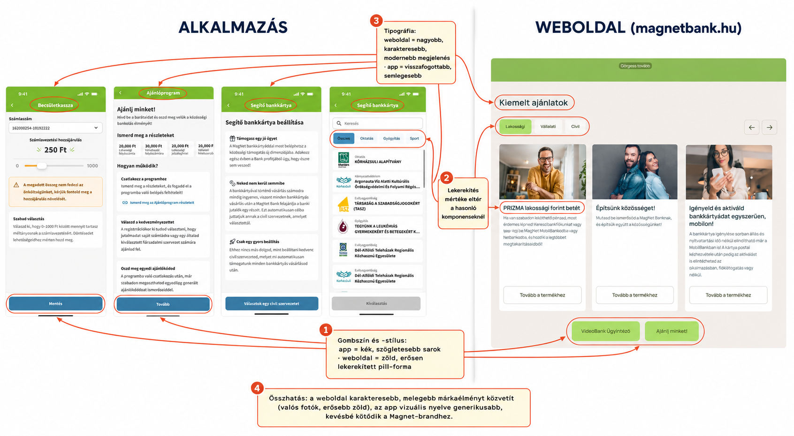
ÖSSZEHASONLÍTÁS — Alkalmazás vs. weboldal look & feel→ görgethetőEz nem csupán esztétikai eltérés, hanem üzleti kockázatot hordoz. Ha az ügyfél a márkával kapcsolatos elvárásait a weboldalon, a fiókban vagy a nyomtatott kommunikáción keresztül alakítja ki, majd az appba belépve egy attól jelentősen eltérő esztétikával találkozik, az a márka üzenetének következetlenségeként élhető meg — mintha nem ugyanaz az intézmény szólna hozzá a különböző csatornákon. Hosszú távon ez a márkába vetett bizalmat és a márka felismerhetőségét gyengítheti, különösen egy olyan szektorban, ahol a konzisztencia a megbízhatóság egyik jele.
További érvek az egységesítés mellett- Bizalmi tőke — bankszektorban a vizuális következetesség a megbízhatóság jele; az eltérés tudat alatt kérdőjelezheti meg, hogy ügyfélszemmel ugyanarról az intézményről van-e szó.
- Csatornaváltási súrlódás — az ügyfelek gyakran váltanak csatornát egy folyamaton belül; az eltérő vizuális nyelv minden váltásnál újratanulási költséget ad, pont a konverziókritikus pontokon.
- Marketingbefektetés hígulása — a weboldalra és print anyagokra fordított brand-építés nem öröklődik át az appba, ha a vizuális nyelv más.
- A Design System saját céljának aláásása — a DS létjogosultsága a konzisztens márkamegjelenítés; ha nem a valós márkát tükrözi, a rendszer a rossz problémát oldja meg jól.
- Kettős differenciálódási veszteség — a generikus, Material Design-szerű megjelenés miatt az app se a versenytársaktól, se a saját csatornáitól nem különbözik eléggé.
- Alacsony javítási költség — most — a token-alapú architektúra miatt a korrekció ma olcsó; minél tovább bővül a komponenskészlet erre alapozva, annál drágább lesz utólag.
A probléma jó hírként nem igényel alapvető szerkezeti újratervezést. A Design System jelenlegi architekturális felépítése és tokenalapú működése megfelelő alapot biztosít arra, hogy a vizuális stílus a márkához szorosabban illeszkedjen anélkül, hogy a komponensrendszert újra kellene építeni.
JavaslatA Design System vizuális nyelvének összehangolása a MagNet márka teljes csatornaportfóliójával (weboldal, print, bankfiók) — nem csupán "karakteresebbé tétel" céljából, hanem kifejezett brand-konzisztencia célkitűzésként kezelve. Kiemelten a CTA-k színhasználata, a lekerekítési rendszer, a tipográfia és a fotó-/illusztrációs stílus egységesítése. Javasolt egy rövid, cross-channel brand-alignment workshop a marketing/brand csapattal, hogy a design system tokenjei explicit módon a meglévő márkastandardokból származzanak, ne önállóan, a DS-en belül alakuljanak ki.
Tipográfia
-
3.2🟠 Jelentős
Tipográfia
ÉRINTETT TERÜLETEK🏢 Márkakonzisztencia · ⚙️ KarbantarthatóságA tipográfiai rendszer egyik legfontosabb fejlesztési lehetősége a használt betűkészletek számának és szerepének racionalizálása.
A jelenlegi rendszerben több különböző font használata figyelhető meg. Ez önmagában nem feltétlenül probléma, azonban egy Design System esetében a túl sok, párhuzamosan használt betűkészlet nehezebbé teszi egy egységes tipográfiai hierarchia és karakter kialakítását.
A tipográfia ugyanis nem csupán technikai elem vagy szövegmegjelenítési eszköz, hanem a márka vizuális identitásának egyik legerősebb hordozója. Ha túl sok különböző font jelenik meg a rendszerben, az egyes felületek könnyebben válhatnak vizuálisan inkonzisztenssé, és nehezebbé válik annak biztosítása is, hogy a különböző komponensek és termékfelületek ugyanahhoz a márkához tartozónak érződjenek.
A sok font használata emellett rendszerszintű karbantartási és fejlesztési komplexitást is növelhet. Minden további betűkészlet újabb font-weighteket, méretbeli és karakterkészletbeli eltéréseket, valamint eltérő rendering-viselkedést hozhat a rendszerbe. Ez különösen akkor válik problémává, amikor a tipográfiai tokenek és style-ok nem minden esetben fedik le egységesen a ténylegesen használt kombinációkat.
A javasolt megközelítés ezért nem feltétlenül egyetlen font használata, hanem egy egyértelmű tipográfiai szerepkörökből felépített rendszer kialakítása. Érdemes lehet például:
- egy, a MagNet márka esztétikáját és emocionális értékeit jól reprezentáló, karakteresebb display fontot választani;
- egy semlegesebb, jól olvasható és a display fonttal vizuálisan harmonizáló body fontot alkalmazni;
- valamint meghatározott fallback system fontokat kijelölni azokra az esetekre, amikor a választott betűkészlet technikai vagy platformfüggő okokból nem jeleníthető meg.
Ez a megközelítés lehetővé tenné, hogy a tipográfia egyszerre legyen karakteres és felismerhető, miközben a hosszabb szövegek és funkcionális UI-elemek esetében megmarad a jó olvashatóság.
A tipográfiai rendszer további fejlesztését indokolja az is, hogy a jelenlegi tokenrendszerben a typography style-ok és tokenek alkalmazása nem minden esetben teljes körű. A vizsgálat során például olyan komponensek is előkerültek, ahol egyedi tipográfiai értékek jelennek meg ahelyett, hogy egy központilag definiált typography style-ra támaszkodnának.
Javasolt font-architektúraFont-architektúra (javasolt szerepkörök) ├── Display — headline-ok, kiemelt brandkommunikáció │ └── Már bevezetve: Rubrik (magnetbank.hu) ├── Body — UI, navigáció, hosszabb szövegek │ └── Jelenleg: Manrope → felülvizsgálat javasolt └── Fallback — platformfüggő biztonsági háló ├── Windows → Segoe UI ├── macOS / iOS → San Francisco ├── Android → Roboto └── Egyéb → system-ui / ArialA Display font esetében a weboldalon már bevezetett Rubrik használata csökkentené a csatornák közötti eltérést — összhangban a 3.1-ben jelzett brand-konzisztencia szemponttal.
JavaslatEgy egyszerűbb és egyértelműbb font-architektúra kialakítása, amelyben a betűkészleteknek meghatározott szerepük van, és ezekhez következetes typography tokenek/style-ok kapcsolódnak. Ezzel egyszerre lenne erősíthető a brand karaktere, a vizuális konzisztencia és a rendszer hosszú távú karbantarthatósága.
Accessibility
WCAG 2.1 AA, fókusz, kontraszt, touch target, képernyőolvasók
Az Accessibility a Design System vizsgálatának egyik kiemelt területe. Az audit során a WCAG 2.1 AA követelményeit vettük alapul, és az egyes komponenseknél külön vizsgáltuk a releváns accessibility szempontokat.
Az Accessibility területén a Design System megfelelő alapokkal rendelkezik, és a legtöbb vizsgált szempont esetében a szükséges megoldások vagy dokumentáció már rendelkezésre állnak.
A legfontosabb további feladatok a kontrasztproblémák rendszerszintű kezelése és a releváns komponensek egységes fókuszállapotának kialakítása. Ezek mellett érdemes hosszabb távon az APCA-alapú vizsgálatot is beépíteni a design review folyamatába.
A képernyőolvasókkal kapcsolatos dokumentáció és a touch target méretek ezzel szemben jelenleg erős pontjai a rendszernek.
- 4.1WCAG 2.1 AA→Vizsgálati keret és APCA kiegészítő módszertan
- 4.2Fókuszállapotok→Egységes, rendszerszintű fókuszjelzés szükségessége
- 4.3Kontrasztarányok→WCAG 2.1 AA alá eső színkombinációk
- 4.4Touch target méretek→Interaktív elemek mérete
- 4.5Képernyőolvasók és szemantikai réteg→ARIA-attribútumok dokumentáltsága
WCAG 2.1 AA
-
4.1🔴 Kritikus alapelv
WCAG 2.1 AA
ÉRINTETT TERÜLETEK♿ Accessibility · 👤 HasználhatóságA Design System accessibility szempontú értékelésének alapját a WCAG 2.1 AA szintű követelményeinek való megfelelés jelenti. Az AA szintet minden releváns komponens esetében minimum elvárásként szükséges kezelni, ahol pedig ez indokolt és érdemi többletterhelés nélkül megvalósítható, érdemes az AAA szintű követelményeket is célként kitűzni.
A klasszikus WCAG-kontrasztvizsgálatok mellett a jövőben érdemes lehet APCA-alapú vizsgálatokat is alkalmazni kiegészítő módszerként. Ez a vizuális kontrasztot az emberi érzékelés szempontjait erősebben figyelembe véve értékeli, így további szempontokat adhat a vizuális olvashatóság megítéléséhez.
Az audit során az accessibility problémákat minden olyan komponensnél külön jeleztük, ahol azok jelentkeztek, és minden esetben konkrét megoldási javaslatokat is tettünk a javításukra. A továbbiakban ezek rendszerszintű egységesítése javasolt.
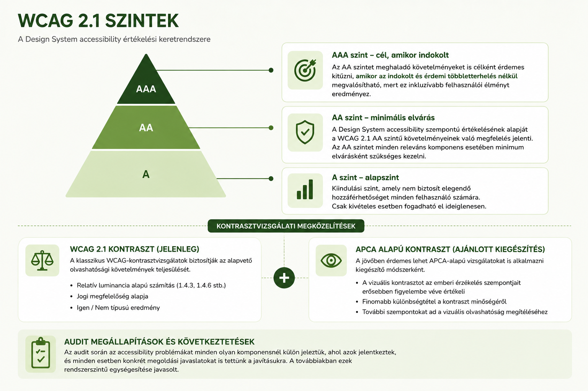
ÖSSZEFOGLALÓ — WCAG 2.1 szintek és a kiegészítő APCA-módszertan⤢ kattints a nagyításhoz
Fókuszállapotok
-
4.2🟠 Jelentős
Fókuszállapotok
ÉRINTETT TERÜLETEK♿ Accessibility · 👤 HasználhatóságA fókuszállapotok tekintetében a komponensek többségénél megfelelő alapok állnak rendelkezésre, ugyanakkor ahol a komponens interaktív használata ezt indokolja, érdemes egyértelmű focus indikátort definiálni és implementálni.
Az audit során minden releváns esetben jeleztük a focus indicator szükségességét, és javaslatot tettünk annak kialakítására. A cél egy olyan egységes fókuszjelzés kialakítása, amely a különböző komponenseken következetesen alkalmazható, és egyértelműen jelzi a billentyűzetes navigáció aktuális pozícióját.
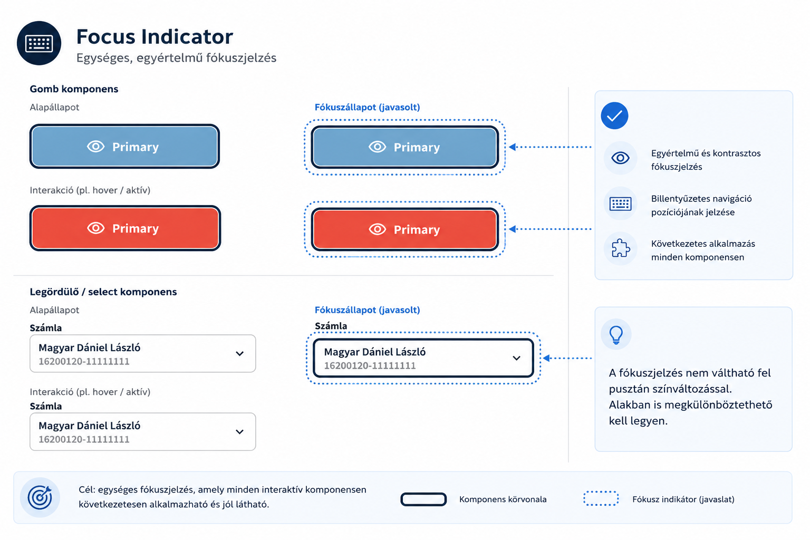
JAVASOLT — Egységes focus indicator koncepció
Kontrasztarányok
-
4.3🟠 Jelentős
Kontrasztarányok
ÉRINTETT TERÜLETEK♿ AccessibilityA kontrasztvizsgálat során több komponensnél is azonosíthatók voltak olyan színkombinációk, amelyek nem teljesítették a WCAG 2.1 AA követelményeit. Ezek jellemzően a szöveges tartalmak és a háttér közötti kontraszt, illetve bizonyos állapotok vizuális megkülönböztetése esetében jelentkeztek.
Az audit során minden érintett komponensnél külön jeleztük a kontrasztproblémát, és konkrét alternatívákat is javasoltunk a javításra. Ezek több esetben a meglévő színpalettán belül is megoldhatók, így nem feltétlenül szükséges a vizuális rendszer alapvető megváltoztatása.
A kontrasztok rendszerszintű felülvizsgálata azért is fontos, mert egy token szintű módosítás több komponensben és állapotban is automatikusan javíthatja a megfelelést.
EREDETI vs. AJÁNLOTT — Kontraszt és információs hierarchiaKapcsolódó komponensek — ahol szintén felmerült kontrasztprobléma
Touch target méretek
-
4.4🟢 Megfelelő
Touch target méretek
ÉRINTETT TERÜLETEK♿ Accessibility · 👤 HasználhatóságA touch target méretek tekintetében a Design System nagyon jól teljesít. A vizsgálat során nem találtam olyan problémát, amely a releváns interaktív elemek méretéből fakadó accessibility-kockázatot jelentene.
A jelenlegi komponensméretek megfelelő alapot biztosítanak a touch alapú használathoz, így ezen a területen további rendszerszintű beavatkozás jelenleg nem szükséges.
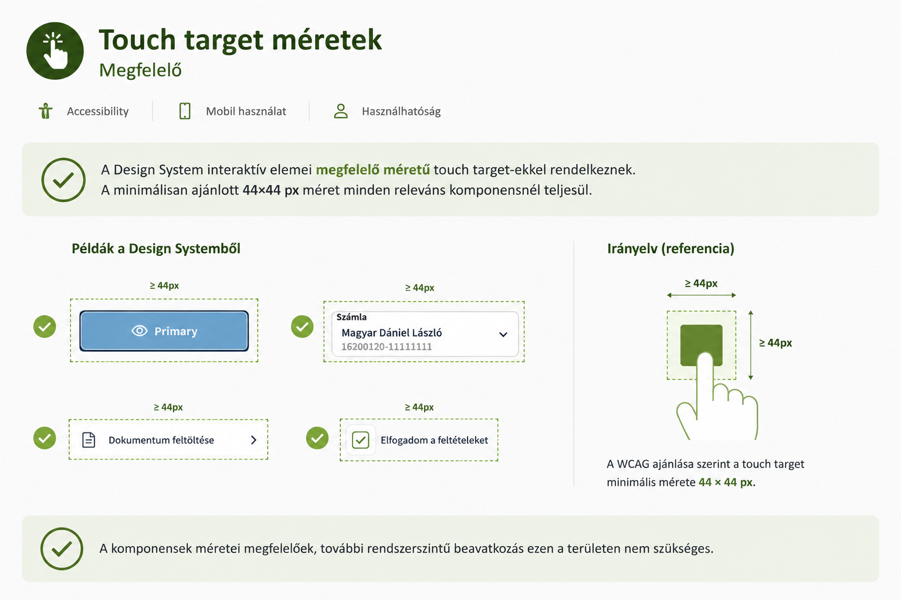
MEGFELELŐ — Touch target méretek a WCAG-referenciához mérve
Képernyőolvasók és szemantikai réteg
-
4.5🟢 Megfelelő
Képernyőolvasók és szemantikai réteg
ÉRINTETT TERÜLETEK♿ Accessibility · 👨💻 Fejlesztői handoff · 📚 DokumentációA képernyőolvasókkal kapcsolatos elvárások a komponensek dokumentációjában megfelelően megjelennek. Több komponens esetében konkrétan definiálva vannak az elvárt ARIA-attribútumok és azok használata, így a fejlesztői implementációhoz szükséges accessibility szempontok megfelelően dokumentáltak.
Ez a terület ezért jelenleg nem jelent hiányosságot a Design Systemben. A dokumentáció meglévő részletességének megtartása és következetes alkalmazása javasolt az új komponensek kialakításakor is.
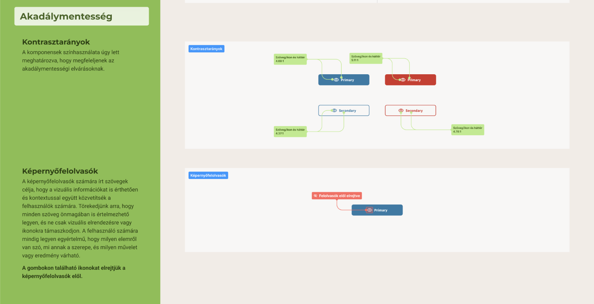
MEGFELELŐ — Kontraszt- és képernyőolvasó-annotációk a komponens-dokumentációban→ görgethető
Fejleszthetőség, teljesség
Bővíthetőség, skálázhatóság, hiányzó komponensek
Ez a fejezet azt vizsgálja, mennyire bővíthető és mennyire teljes a jelenlegi komponenskészlet: alkalmas-e a rendszer a későbbi növekedésre, és vannak-e hiányzó, érdemben pótlandó komponensek.
A Fejleszthetőség, teljesség a Design System egyik legerősebb területe. A skálázhatóság vizsgálata nem talált olyan architekturális korlátot, amely a rendszer későbbi bővítését akadályozná — a rétegzett tokenrendszer és a komplex komponenseknél alkalmazott Slots-alapú felépítés jó alapot ad új komponensek és tematikus variánsok bevezetéséhez.
A komponenskészlet lefedettsége is megfelelőnek tekinthető: nem azonosítottunk olyan hiányosságot, amely érdemben akadályozná a termékfejlesztést. Két kisebb bővítési lehetőség merült fel — egy kompaktabb gombméret sűrűbb UI-helyzetekhez, valamint egy klasszikus Modal/Dialog komponens a Bottom Sheet mellé —, ezek azonban inkább a rendszer rugalmasságát növelnék, nem tényleges hiánypótlások.
Összességében ez a fejezet nem igényel beavatkozást; a javasolt bővítések opcionálisak és alacsony prioritásúak.
- 5.1Design System bővíthetősége, skálázhatósága→Tokenrétegzettség és beágyazott komponensstruktúra
- 5.2Hiányzó komponensek azonosítása→Gombméretek és Modal/Dialog komponens
Design System bővíthetősége, skálázhatósága
-
5.1🟢 Megfelelő
Design System bővíthetősége, skálázhatósága
ÉRINTETT TERÜLETEK📈 Skálázhatóság · ⚙️ KarbantarthatóságA Design System skálázhatósága összességében nagyon jól megoldott. A jelenlegi architektúra megfelelő alapot biztosít új komponensek, variánsok és további vizuális vagy tematikus igények későbbi bevezetéséhez.
Ennek egyik fontos alapja a tokenrendszer rétegzettsége, amely lehetővé teszi, hogy a változtatások ne kizárólag egyes komponenseken, hanem rendszerszinten is kezelhetők legyenek. Jó példa erre a színek esetében alkalmazott Primitive → Theme → Component token logika, amely megfelelő alapot biztosít a későbbi brand- vagy tematikus bővítésekhez.
Hasonlóan jól skálázható irányt jelent a komplex komponenseknél alkalmazható beágyazott komponensstruktúra és Slots-alapú kompozíció. Ez lehetővé teszi, hogy egy komplexebb elem ne egyetlen merev komponensként működjön, hanem újrahasznosítható építőelemekből legyen összeállítható.
A rendszer jelenlegi felépítése ezért nem mutat olyan architekturális korlátot, amely a későbbi bővítést akadályozná. A korábban azonosított token- és komponensszintű fejlesztések elsősorban ezt a már meglévő skálázhatóságot tudják tovább erősíteni.
Color Primitives→ Color Themes→ ComponentsÉpítőelem→ Slot→ Kompozit komponensRészletesen lásd: 6.1 · Color Tokens és 1.1 · Komponensek felépítése és beállíthatósága (Category sorter).
Hiányzó komponensek azonosítása
-
5.2🔵 Optimalizálás
Hiányzó komponensek azonosítása
ÉRINTETT TERÜLETEK📈 Skálázhatóság · 👤 Használhatóság · 🧩 KomponenslefedettségAz alapvető komponenskészlet összességében teljesnek tekinthető, a vizsgálat során nem azonosítottam olyan jelentős hiányosságot, amely a Design System használhatóságát vagy a termékek fejlesztését érdemben akadályozná.
Ugyanakkor néhány komponens esetében érdemes lehet a meglévő készlet további bővítésén elgondolkodni.
GombokA jelenlegi gombkészlet mellett hasznos lehet további méretvariációk kialakítása. Bizonyos kisebb vagy sűrűbb UI-szituációkban egy kompaktabb gombméret rugalmasabban alkalmazható lenne, miközben a meglévő méretek a fő CTA-k számára továbbra is használhatók maradnának.
ModalA jelenlegi komponenskészletben a Bottom Sheet megoldás rendelkezésre áll, azonban klasszikus Modal/Dialog komponens nem jelenik meg. Ennek kialakítása bizonyos olyan helyzetekben lehet hasznos, ahol a tartalom vagy a feladat nem indokolja a teljes képernyős vagy alulról érkező megjelenítést.
Ezek azonban nem tekinthetők jelentős hiányosságoknak. A jelenlegi komponensszám és lefedettség alapján a Design System már megfelelően támogatja a termékfelületek kialakítását; a javasolt bővítések elsősorban a rendszer rugalmasságát és a speciálisabb használati helyzetek kezelését javíthatják.
Komponens-lefedettség (jelenlegi vs. javasolt bővítés) ├── Gombok │ ├── Meglévő méretek — fő CTA-khoz illeszkednek │ └── + Javasolt: Compact méret — sűrűbb UI-szituációkhoz └── Overlay-minták ├── Meglévő: Bottom Sheet └── Hiányzik: Modal / Dialog — nem fullscreen, nem alulról induló esetekhez
Szűrési nézetek
A fejezetekben szereplő összes megállapítás két keresztmetszeti nézetben is böngészhető: érintett terület, illetve súlyosság szerint.
- —Érintett terület szerint→Megállapítások szűrése a kapcsolódó terület alapján
- —Súlyosság szerint→Megállapítások szűrése a probléma súlyossága alapján
- KritikusEzt azonnal javítani kell.
- JelentősEzt prioritással javítani kell.
- JavítandóEzt érdemes javítani.
- OptimalizálásEzt érdemes továbbfejleszteni.
- MegfelelőNincs teendő.
Érintett terület szerint
A fejezetekben szereplő összes megállapítás szűrhető az érintett terület szerint. Egyszerre egy szűrő lehet aktív.
Súlyosság szerint
A fejezetekben szereplő összes megállapítás szűrhető súlyosság szerint. Egyszerre egy szűrő lehet aktív.